UNIFORM SPACES
There are several properties of metric spaces which are not topological but are closely connected with topological properties. We give examples of the sort of connections contemplated, postponing the definitions and proofs. The property of being a Cauchy sequence is not a topological invariant, for the map f such that f(x) = 1/x is a homeomorphism of the space of positive real numbers onto itself which carries the Cauchy sequence {1/(n + 1): n ε ω} into the non-Cauchy sequence {n + 1, n ε ω}. However, it is possible to derive topological results from statements about Cauchy sequences; for example, a subset A of the space of all real numbers is closed if and only if each Cauchy sequence in A converges to some point of A. The reverse sort of implication may also occur; thus, each continuous function on a compact metric space is uniformly continuous. In this case we deduce from a topological premise (that the space is compact) a non-topological conclusion (that a function is uniformly continuous). This chapter is devoted to a study of quasi-topological results of this sort.
The mathematical construct employed in studying uniformity properties is called a uniform space. A brief discussion will indicate how this notion, which is due to A. Weil [1], applies.
A sequence {xn, n ε ω} in a pseudo-metric space (X,d) is called a Cauchy sequence iff d(xm,xn) converges to zero as m and n become large. This notion is not meaningful in an arbitrary topological space; in order to define a Cauchy sequence it is necessary to know, in some sense, for what pairs the distance d(x,y) is small. This statement may be made precise in the following way. If Vd,r = {(x,y): d{x,y) < r}, then {xn, n ε ω} is a Cauchy sequence iff for each positive r it is true that (xm,xn) is a member of Vd,r for m and n large. The notion of uniform continuity can also be formulated in terms of the family of all sets of the form Vd,r. This suggests consideration of a set X and a special family of subsets of X × X.
If X is a topological group, then a sequence {xn, n ε ω] may be called a Cauchy sequence iff xmxn−1 is near the identity ε of the group when m and n are large. Again, the information needed to make this definition is information about pairs of points. We need to know which pairs of points (x,y) are such that xy−1 is near the identity e. For each neighborhood U of e let VU = {(x,y): xy−1 ε U}. Then clearly the family of all sets of the form VU determines which sequences are Cauchy.
A uniform space is defined to be a set X together with a family of subsets of X × X which satisfies certain natural conditions. This follows the pattern suggested by both of the preceding examples. However, it should be emphasized that this is by no means the only framework in which uniformity can be studied. It is possible to study a set X together with a distinguished family of pseudo-metrics for X, or to distinguish a collection of covers of X which are to be uniform covers (roughly in the sense of the Lebesgue covering lemma 5.26). One may also consider “metrics” with values in a structure less restricted than that of the real numbers. All of these notions are essentially equivalent, as indicated in the problems at the end of the chapter.
Finally, it must be said that there are uniformity properties of metric spaces which apparently do not generalize to less restricted situations. The last section is devoted to a study of some of these.
UNIFORMITIES AND THE UNIFORM TOPOLOGY
We will be concerned with subsets of a cartesian product X × X of a set with itself. These subsets are relations in the sense of chapter 0, and for convenience we review some of the earlier definitions and results about them. A relation is a set of ordered pairs, and if U is a relation the inverse relation U−1 is the set of all pairs (x,y) such that (y,x) ε U. The operation of taking inverses is involutory in the sense that (U−1)−1 is always U. If U = U−1, then U is called symmetric. If U and V are relations, then the composition U ∘ V is the set of all pairs (x,z) such that for some y it is true that (x,y) ε V and (y,z) ε U. Composition is associative, that is, U ∘ {V ∘ W) = {U ∘ V) ∘ W, and it is always true that (U ∘ V)−1 = V−1 ∘ U−1. The set of all pairs (x,x) for x in X is called the identity relation, or the diagonal, and is denoted by Δ(X) or simply Δ. For each subset A of X the set U[A] is defined to be {y: {x,y) ε U for some x in A}, and if x is a point of X, then U[x] is U[{x}]. For each U and V and each A it is true that {U ∘ V)[A| = U[V[A]}. Finally a simple lemma will be needed.
1 LEMMA If V is symmetric, then 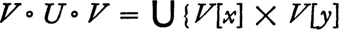: (x,y) ε U.
PROOF By definition V ∘ U ∘ V is the set of all pairs (u,v) such that (u,x) ε V, (x,y) ε U and (y,v) ε U for some x and some y. Since V is symmetric this is the set of all (u,y) such that u ε V[x] and v ε V[y] for some (x,y) in U. But u ε V[x] and v ε V[y] iff (u,v) ε V[x] × V[y], and hence V ∘ U ∘ V = {(u,v): (u,v) ε V[x] × V[y] for some  . ∎
. ∎
A uniformity for a set X is a non-void family  of subsets of X × X such that
of subsets of X × X such that
(a)each member of  contains the diagonal Δ;
contains the diagonal Δ;
(b)if 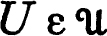, then 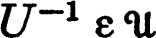;
(c)if , then V ∘ V ⊂ U for some f in  ;
;
(d)if U and V are members of  , then 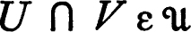; and
, then 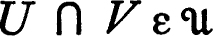; and
(e)if and U ⊂ V ⊂ X × X, then 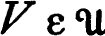.
The pair 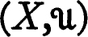 is a uniform space.
The metric antecedents of the conditions above are not hard to discern. The first is derived from the condition that d(x,x) = 0 and the second derives from the symmetry condition d(x,y) = d(y,x). The third is a vestigal form of the triangle inequality—it says roughly that for r-spheres there are (r/2)-spheres. The fourth and fifth resemble axioms for the neighborhood system of a point and they will be used to derive the corresponding properties for a neighborhood system relative to a topology which will presently be defined.
There may be many different uniformities for a set X. The largest of these is the family of all those subsets of X × X which contain Δ and the smallest is the family whose only member is X × X. If X is the set of real numbers the usual uniformity for X is the family  of all subsets U of X × X such that {(x,y): |x − y| < r} ⊂ U for some positive number r. Each member of
of all subsets U of X × X such that {(x,y): |x − y| < r} ⊂ U for some positive number r. Each member of  is a neighborhood of the diagonal Δ (the line with equation y = x), but it is to be emphasized that not every neighborhood of the diagonal is a member of
is a neighborhood of the diagonal Δ (the line with equation y = x), but it is to be emphasized that not every neighborhood of the diagonal is a member of  . For example, the set {(x,y): | x − y | < 1/(1 + | y |)} is a neighborhood of Δ but not a member of
. For example, the set {(x,y): | x − y | < 1/(1 + | y |)} is a neighborhood of Δ but not a member of  .
.
It is not generally true that the union or the intersection of two uniformities for X is a uniformity. However, the union of a collection of uniformities generates a uniformity in a rather natural sense. A subfamily  of a uniformity
of a uniformity  is a base for
is a base for  iff each member of
iff each member of  contains a member of
contains a member of  . If
. If  is a base for
is a base for  , then
, then  determines
determines  entirely, for a subset U of X × X belongs to
entirely, for a subset U of X × X belongs to  iff U contains a member of
iff U contains a member of  . A subfamily 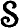 is a subbase for
. A subfamily 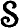 is a subbase for  iff the family of finite intersections of members of is a base for
iff the family of finite intersections of members of is a base for  . These definitions are entirely analogous to the definitions of base and subbase for a topology.
. These definitions are entirely analogous to the definitions of base and subbase for a topology.
2 THEOREM A non-void family  of subsets of X × X is a base for some uniformity for X if and only if
of subsets of X × X is a base for some uniformity for X if and only if
(a)each member of  contains the diagonal Δ;
contains the diagonal Δ;
(b)if 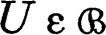, then U−1 contains a member of  ;
;
(c)if , then V ∘ V ⊂ U for some V in  ; and
; and
(d)the intersection of two members of  contains a member.
contains a member.
The straightforward proof of this proposition is omitted.
The property of being a subbase for some uniformity is less easy to characterize. However, the following simple result is adequate for our needs.
3 THEOREM A family of subsets of X × X is a subbase for some uniformity for X if
(a)each member of contains the diagonal Δ,
(b)for each U in the set U−1 contains a member of , and
(c)for each U in there is V in such that V ∘ V ⊂ U.
In particular, the union of any collection of uniformities for X is the subbase for a uniformity for X.
PROOF It must be shown that the family  of finite intersections of members of satisfies the conditions of 6.2. This follows easily from the observation: If U1, … Un and V1, …, Vn are subsets of X × X, if 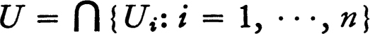 and 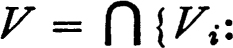 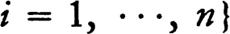, then V ⊂ U−1 (or V ∘ V ⊂ U) whenever Vi ⊂ Ui−1 (respectively, Vi ∘ Vi ⊂ Ui) for each i. ∎
of finite intersections of members of satisfies the conditions of 6.2. This follows easily from the observation: If U1, … Un and V1, …, Vn are subsets of X × X, if 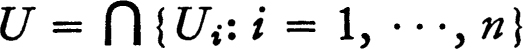 and 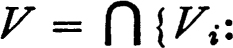 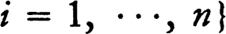, then V ⊂ U−1 (or V ∘ V ⊂ U) whenever Vi ⊂ Ui−1 (respectively, Vi ∘ Vi ⊂ Ui) for each i. ∎
If is a uniform space the topology  of the uniformity
of the uniformity  , or the uniform topology, is the family of all subsets T of X such that for each x in T there is U in
, or the uniform topology, is the family of all subsets T of X such that for each x in T there is U in  such that U[x] ⊂ T. (This is precisely the generalization of the metric topology, which is the family of all sets which contain a sphere about each point.) It must be verified that
such that U[x] ⊂ T. (This is precisely the generalization of the metric topology, which is the family of all sets which contain a sphere about each point.) It must be verified that  is indeed a topology, but this offers no difficulty: In view of the definition, the union of members of
is indeed a topology, but this offers no difficulty: In view of the definition, the union of members of  is surely a member of
is surely a member of  . If T and S are members of
. If T and S are members of  and x ε T ∩ S, then there are U and V in
and x ε T ∩ S, then there are U and V in  such that U[x] ⊂ T and V[x] ⊂ S, and hence (U ∩ V)[x] ⊂ T ∩ S; consequently 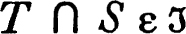 and
such that U[x] ⊂ T and V[x] ⊂ S, and hence (U ∩ V)[x] ⊂ T ∩ S; consequently 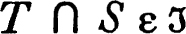 and  is a topology.
is a topology.
The relation between a uniformity and the uniform topology will now be examined.
4 THEOREM The interior of a subset A of X relative to the uniform topology is the set of all points x such that U[x] ⊂ A for some U in  .
.
PROOF It must be shown that the set B = {x: U[x] ⊂ A for some U in  } is open relative to the uniform topology, for B surely contains every open subset of A and, if B is open, then it must necessarily be the interior of A. If x ε B, then there is a member U of
} is open relative to the uniform topology, for B surely contains every open subset of A and, if B is open, then it must necessarily be the interior of A. If x ε B, then there is a member U of  such that U[x] ⊂ A and there is V in
such that U[x] ⊂ A and there is V in  such that V ∘ V ⊂ U. If y ε V[x], then V[y] ⊂ V ∘ V[x] ⊂ U[x] ⊂ A, and hence y ε B. Hence V[x] ⊂ B and B is open. ∎
such that V ∘ V ⊂ U. If y ε V[x], then V[y] ⊂ V ∘ V[x] ⊂ U[x] ⊂ A, and hence y ε B. Hence V[x] ⊂ B and B is open. ∎
It follows immediately that U[x] is a neighborhood of x for each U in the uniformity  , and consequently the family of all sets U[x] for U in
, and consequently the family of all sets U[x] for U in  is a base for the neighborhood system of x (the family is actually identical with the neighborhood system but this is of no great importance). The following proposition is then clear.
is a base for the neighborhood system of x (the family is actually identical with the neighborhood system but this is of no great importance). The following proposition is then clear.
5 THEOREM If  is a base (or subbase) for the uniformity
is a base (or subbase) for the uniformity  , then for each x the family of sets U[x] for U in
, then for each x the family of sets U[x] for U in  is a base (subbase respectively) for the neighborhood system of x.
is a base (subbase respectively) for the neighborhood system of x.
The uniform topology for X may be used to construct a product topology for X × X. As might be expected, members of the uniformity have a special structure relative to this topology.
6 THEOREM If U is a member of the uniformity  , then the interior of U is also a member; consequently the family of all open symmetric members of
, then the interior of U is also a member; consequently the family of all open symmetric members of  is a base for
is a base for  .
.
PROOF The interior of a subset M of X × X is the set of all (x,y) such that, for some U and some V in  , U[x] × V|y| ⊂ M. Since 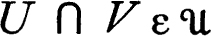 the interior of M is {(x,y): V[x) × V[y] ⊂ M for some V in
, U[x] × V|y| ⊂ M. Since 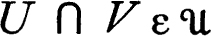 the interior of M is {(x,y): V[x) × V[y] ⊂ M for some V in  }. If there is a symmetric member V of
}. If there is a symmetric member V of  such that V ∘ V ∘ V ⊂ U and, according to lemma 6.1, 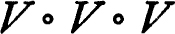 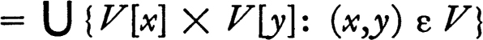. Hence every point of V is an interior point of U and, since the interior of U contains V, it is a member of
such that V ∘ V ∘ V ⊂ U and, according to lemma 6.1, 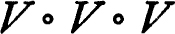 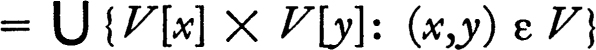. Hence every point of V is an interior point of U and, since the interior of U contains V, it is a member of  . ∎
. ∎
In view of the foregoing theorem every member of a uniformity is a neighborhood of the diagonal. It is to be emphasized that the converse of this proposition is false. There may be many very different uniformities for X, all having the same topology and hence the same family of neighborhoods of the diagonal.
7 THEOREM The closure, relative to the uniform topology, of a subset A of X is 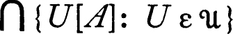. The closure of a subset M of X × X is 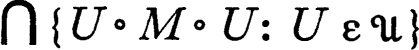.
PROOF A point x belongs to the closure of a subset A of X iff U[x] intersects A for each U in  . But U[x] intersects A iff x ε U−1[A], and since each member of
. But U[x] intersects A iff x ε U−1[A], and since each member of  contains a symmetric member, x ε A− iff x ε U[A] for each U in
contains a symmetric member, x ε A− iff x ε U[A] for each U in  . The first statement is then proved. Similarly, if U is a symmetric member of
. The first statement is then proved. Similarly, if U is a symmetric member of  , then U[x] × U[y] intersects a subset M of X × X iff (x,y) ε U[u] × U[v] for some (u,v) in M, that is, iff 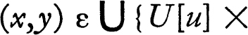 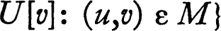. Since by lemma 6.1 this last set is U ∘ M ∘ U it follows that (x,y) ε M− iff 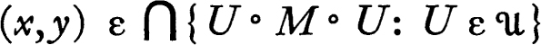. ∎
, then U[x] × U[y] intersects a subset M of X × X iff (x,y) ε U[u] × U[v] for some (u,v) in M, that is, iff 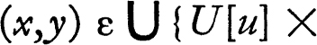 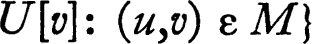. Since by lemma 6.1 this last set is U ∘ M ∘ U it follows that (x,y) ε M− iff 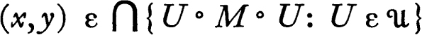. ∎
8 THEOREM The family of closed symmetric members of a uniformity  is a base for
is a base for  .
.
PROOF If and V is a member of  such that V ∘ V ∘ V ⊂ U, then V ∘ V ∘ V contains the closure of V in view of the preceding theorem; hence U contains a closed member W of
such that V ∘ V ∘ V ⊂ U, then V ∘ V ∘ V contains the closure of V in view of the preceding theorem; hence U contains a closed member W of  and W ∩ W−1 is a closed symmetric member. ∎
and W ∩ W−1 is a closed symmetric member. ∎
It will be shown presently that a uniform space (more precisely a space with a uniform topology) is always completely regular. At the moment it is easy to see that such a space is regular, for each neighborhood of a point x contains a neighborhood V[x] such that V is a closed member of  , and V[x] is consequently closed. Therefore a space with a uniform topology is a Hausdorff space iff each set consisting of a single point is closed. Since the closure of the set {x} is 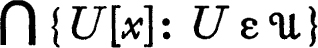, the space is Hausdorff iff 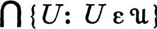 is the diagonal Δ. In this case is said to be Hausdorff or separated.
, and V[x] is consequently closed. Therefore a space with a uniform topology is a Hausdorff space iff each set consisting of a single point is closed. Since the closure of the set {x} is 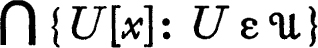, the space is Hausdorff iff 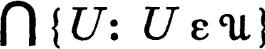 is the diagonal Δ. In this case is said to be Hausdorff or separated.
UNIFORM CONTINUITY; PRODUCT UNIFORMITIES
If f is a function on a uniform space with values in a uniform space 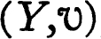, then f is uniformly continuous relative to  and
and  iff for each V in
iff for each V in  the set {(x,y): (f(x), f(y)) ε V} is a member of
the set {(x,y): (f(x), f(y)) ε V} is a member of  . This condition may be rephrased in several ways. For each function f on X to Y let f2 be the induced function on X × X to Y × Y which is defined by f2(x,y) = (f(x), f(y)). Then f is uniformly continuous iff for each V in
. This condition may be rephrased in several ways. For each function f on X to Y let f2 be the induced function on X × X to Y × Y which is defined by f2(x,y) = (f(x), f(y)). Then f is uniformly continuous iff for each V in  there is U in
there is U in  such that f2[U] ⊂ V. We also have: if is a subbase for
such that f2[U] ⊂ V. We also have: if is a subbase for  , then f is uniformly continuous iff 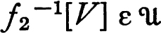 for each V in , because f2−1 preserves unions and intersections. If Y is the set of real numbers and V is the usual uniformity, then it follows that f is uniformly continuous iff for each positive number r there is U in
, then f is uniformly continuous iff 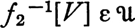 for each V in , because f2−1 preserves unions and intersections. If Y is the set of real numbers and V is the usual uniformity, then it follows that f is uniformly continuous iff for each positive number r there is U in  such that | f(x) − f(y) | < r whenever (x,y) ε U. If X is also the space of real numbers with the usual uniformity, then f is uniformly continuous iff for each positive number r there is a positive number s such that | f(x) − f(y) | < r whenever |x − y | < s.
such that | f(x) − f(y) | < r whenever (x,y) ε U. If X is also the space of real numbers with the usual uniformity, then f is uniformly continuous iff for each positive number r there is a positive number s such that | f(x) − f(y) | < r whenever |x − y | < s.
It is evident that, if f is on X to Y and g is a function on Y, then (g ∘ f)2 = g2 ∘ f2, and from this it follows that the composition of two uniformly continuous functions is again uniformly continuous. If f is one-to-one map of X onto Y and both f and f−1 are uniformly continuous, then f is a uniform isomorphism, and the spaces X and Y (more precisely and ) are said to be uniformly equivalent. The composition of two uniform isomorphisms, the inverse of a uniform isomorphism, and the identity map of a space onto itself are all uniform isomorphisms, and consequently the collection of all uniform spaces is divided into equivalence classes, consisting of uniformly equivalent spaces. A property which when possessed by one uniform space is also possessed by every uniformly isomorphic space is a uniform invariant. With a few exceptions the properties studied in this chapter are uniform invariants.
As might be expected, uniform continuity implies continuity relative to the uniform topology.
9 THEOREM Each uniformly continuous function is continuous relative to the uniform topology, and hence each uniform isomorphism is a homeomorphism.
PROOF Let f be a uniformly continuous function on to and let U be a neighborhood of f(x). Then there is V in  such that V[f(x)] ⊂ U, and f−1[V[f(x)]] = {y: f(y) ε V[f(x)]} = {y: (f(x), f(y)) ε V) = f2−1[V][x], and this is a neighborhood of x. Hence f−1[U] is a neighborhood of x and continuity is proved. ∎
such that V[f(x)] ⊂ U, and f−1[V[f(x)]] = {y: f(y) ε V[f(x)]} = {y: (f(x), f(y)) ε V) = f2−1[V][x], and this is a neighborhood of x. Hence f−1[U] is a neighborhood of x and continuity is proved. ∎
If f is a function on a set X to a uniform space , then it is not generally true that the family of all sets f2−1[V] for V in  is a uniformity for X. The difficulty is that there may be a subset of X × X which contains some set f2−1[V], but is not the inverse of any subset of Y × Y. However, this difficulty is not profound; the family of all f2−1[V] is the base for a uniformity
is a uniformity for X. The difficulty is that there may be a subset of X × X which contains some set f2−1[V], but is not the inverse of any subset of Y × Y. However, this difficulty is not profound; the family of all f2−1[V] is the base for a uniformity  for X, as we now verify. It is clear that f2−1 preserves inclusions, intersections, and inverses (that is, f2−1 [V−1] = [f2−1[V]]−1), and consequently it is only necessary to show that for each member U of
for X, as we now verify. It is clear that f2−1 preserves inclusions, intersections, and inverses (that is, f2−1 [V−1] = [f2−1[V]]−1), and consequently it is only necessary to show that for each member U of  there is V in
there is V in  such that f2−1[V] ∘ f2−1[V] ⊂ f2−1[U]. But if V ∘ V ⊂ U and (x,y) and (y,z) belong to f2−1[V], then both (f(x), f(y)) and (f(y), f(z)) belong to V, and hence (f(x), f(z)) ε F ∘ V. It follows that the family of inverses of members of
such that f2−1[V] ∘ f2−1[V] ⊂ f2−1[U]. But if V ∘ V ⊂ U and (x,y) and (y,z) belong to f2−1[V], then both (f(x), f(y)) and (f(y), f(z)) belong to V, and hence (f(x), f(z)) ε F ∘ V. It follows that the family of inverses of members of  is indeed a base for a uniformity
is indeed a base for a uniformity  for X. It is clear that f is uniformly continuous relative to
for X. It is clear that f is uniformly continuous relative to  and
and  , and in fact
, and in fact  is smaller than every other uniformity for which f is uniformly continuous.
is smaller than every other uniformity for which f is uniformly continuous.
If is a uniform space and Y is a subset of X, then in view of the preceding discussion there is a smallest uniformity  such that the identity map of Y into X is uniformly continuous. It is clear that the members of
such that the identity map of Y into X is uniformly continuous. It is clear that the members of  are simply the intersections of the members of
are simply the intersections of the members of  with Y × Y (sometimes called the trace of
with Y × Y (sometimes called the trace of  on Y × Y). The uniformity
on Y × Y). The uniformity  is called the relativization of
is called the relativization of  to Y, or the relative uniformity for Y, and is called a uniform subspace of the space . We omit the simple verification of the fact that the topology of the relative uniformity
to Y, or the relative uniformity for Y, and is called a uniform subspace of the space . We omit the simple verification of the fact that the topology of the relative uniformity  is the relativized topology of
is the relativized topology of  .
.
We have seen that there is always a unique smallest uniformity which makes a map of a set X into a uniform space uniformly continuous. This proposition may be extended to a family F of functions such that each member f of F maps X into a uniform space 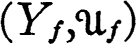. The family of all sets of the form f2−1[U] = {(x,y): (f(x), f (y) ε U}, for f in F and U in 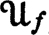, is a subbase for a uniformity  for X, and
for X, and  is the smallest uniformity such that each map f is uniformly continuous. (Theorem 6.3 shows that the family of sets of the form f2−1[U] is a subbase for a uniformity, and evidently
is the smallest uniformity such that each map f is uniformly continuous. (Theorem 6.3 shows that the family of sets of the form f2−1[U] is a subbase for a uniformity, and evidently  makes each f uniformly continuous and is smaller than every other uniformity with this property.) It is in precisely this way that the product uniformity is defined. If 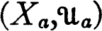 is a uniform space for each member a of an index set A, then the product uniformity for 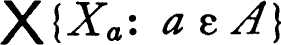 is the smallest uniformity such that projection into each coordinate space is uniformly continuous. The family of all sets of the form {(x,y): (xa,ya) ε U}, for a in A and U in 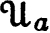, is a subbase for the product uniformity. If x is a member of the product, then a subbase for the neighborhood system of x (relative to the uniform topology) may be constructed from the subbase for the product uniformity. Hence the family of all sets of the form {y: (xa,ya) ε U} is a sub-base for the neighborhood system of x. It follows that a base for the neighborhood system of x relative to the topology of the product uniformity is the family of finite intersections of sets of the form {y: ya ε U[xa]} for a in A and U in . But the same family is also a base for the neighborhood system of x relative to the product topology, and consequently the product topology is the topology of the product uniformity. This statement is the first half of the following theorem.
makes each f uniformly continuous and is smaller than every other uniformity with this property.) It is in precisely this way that the product uniformity is defined. If 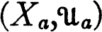 is a uniform space for each member a of an index set A, then the product uniformity for 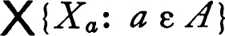 is the smallest uniformity such that projection into each coordinate space is uniformly continuous. The family of all sets of the form {(x,y): (xa,ya) ε U}, for a in A and U in 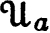, is a subbase for the product uniformity. If x is a member of the product, then a subbase for the neighborhood system of x (relative to the uniform topology) may be constructed from the subbase for the product uniformity. Hence the family of all sets of the form {y: (xa,ya) ε U} is a sub-base for the neighborhood system of x. It follows that a base for the neighborhood system of x relative to the topology of the product uniformity is the family of finite intersections of sets of the form {y: ya ε U[xa]} for a in A and U in . But the same family is also a base for the neighborhood system of x relative to the product topology, and consequently the product topology is the topology of the product uniformity. This statement is the first half of the following theorem.
10 THEOREM The topology of the product uniformity is the product topology.
A function f on a uniform space to a product of uniform spaces is uniformly continuous if and only if the composition of f with each projection into a coordinate space is uniformly continuous.
PROOF If f is uniformly continuous with values in the product then each projection Pa is uniformly continuous and the composition Pa ∘ f is uniformly continuous. If Pa ∘ f is uniformly continuous for each a in A and U is a member of the uniformity of Xa, then {(u,v): (Pa ∘ f(u), Pa ∘ f(v)) ε U} is a member of the uniformity  of the domain of f. But this set can be written in the form f2−1[{(x,y): (xa,ya) ε U}]. Hence the inverse under f2 of each member of a subbase for the product uniformity belongs to
of the domain of f. But this set can be written in the form f2−1[{(x,y): (xa,ya) ε U}]. Hence the inverse under f2 of each member of a subbase for the product uniformity belongs to  and f is therefore uniformly continuous. ∎
and f is therefore uniformly continuous. ∎
The next proposition begins the development of the relation between uniformities and pseudo-metrics for X.
11 THEOREM Let be a uniform space and let d be a pseudo-metric for X. Then d is uniformly continuous on X × X relative to the product uniformity if and only if the set {(x,y): d(x,y) < r} is a member of  for each positive number r.
for each positive number r.
PROOF Let Vd,r = {{x,y): d(x,y) < r). It must be shown that 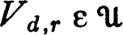 for each positive r iff d is uniformly continuous with respect to the product uniformity for X × X. If U is a member of  , then the sets {((x,y), (u,v)): (x,u) ε U} and {((x,y), (u,v)): (y,u) ε U) belong to the product uniformity, and it is easy to see that the family of all sets of the form {((x,y), (u,v)): (x,u) ε U and (y,v) ε U} is a base for the product uniformity. Hence if d is uniformly continuous, then for each positive r there is U in
, then the sets {((x,y), (u,v)): (x,u) ε U} and {((x,y), (u,v)): (y,u) ε U) belong to the product uniformity, and it is easy to see that the family of all sets of the form {((x,y), (u,v)): (x,u) ε U and (y,v) ε U} is a base for the product uniformity. Hence if d is uniformly continuous, then for each positive r there is U in  such that, if (x,u) and (y,v) belong to U, then | d(x,y) − d(u,v) | < r. In particular, letting (u,v) = (y,y), it follows that, if (x,y) ε U, then d(x,y) < r. Then U ⊂ Vd,r and consequently . To prove the converse observe that, if both (x,u) and (y,v) belong to Vd,r, then | d(x,y) − d(u,v) | < 2r because d(x,y) ≦ d(x,u) + d(u,v) + d(y,v) and d(u,v) ≦ d(x,u) + d(x,y) + d(y,v). It follows that, if for each positive r, then d is uniformly continuous. ∎
such that, if (x,u) and (y,v) belong to U, then | d(x,y) − d(u,v) | < r. In particular, letting (u,v) = (y,y), it follows that, if (x,y) ε U, then d(x,y) < r. Then U ⊂ Vd,r and consequently . To prove the converse observe that, if both (x,u) and (y,v) belong to Vd,r, then | d(x,y) − d(u,v) | < 2r because d(x,y) ≦ d(x,u) + d(u,v) + d(y,v) and d(u,v) ≦ d(x,u) + d(x,y) + d(y,v). It follows that, if for each positive r, then d is uniformly continuous. ∎
METRIZATION
The purpose of this section is to compare uniform spaces and pseudo-metrizable spaces. The comparison is an example of the standard procedure for testing the effectiveness of a generalization. The generalization is compared with the mathematical object which it purports to generalize in order to discover the extent to which the basic concepts have been isolated. In this case (as in many other instances) the comparison yields a representation of the generalized object in terms of its progenitor. A uniformity will be assigned to each family of pseudo-metrics for a set X, and the principal result of the section states that every uniformity is derived in this fashion from the family of its uniformly continuous pseudo-metrics. It will also be shown that a uniformity can be derived from a single pseudo-metric if and only if the uniformity has a countable base.
Each pseudo-metric d for a set X generates a uniformity in the following way. For each positive number r let Vd,r = {(x,y): d(x,y) < r). Clearly (Vd,r)−1 = Vd,r, Vd,r ∩ Vd,s = Vd,t where t = min [r,s], and Vd,r ∘ Vd,r ⊂ Vd,2r. It follows that the family of all sets of the form Vd,r is a base for a uniformity for X. This uniformity is called the pseudo-metric uniformity, or the uniformity generated by d. A uniform space is said to be pseudo-metrizable (or metrizable) if and only if there is a pseudo-metric (metric, respectively) d such that  is the uniformity generated by d. The uniformity generated by a pseudo-metric d can be described in another way. According to 6.11 a pseudo-metric d is uniformly continuous relative to a uniformity
is the uniformity generated by d. The uniformity generated by a pseudo-metric d can be described in another way. According to 6.11 a pseudo-metric d is uniformly continuous relative to a uniformity  (more precisely, relative to the product uniformity constructed from
(more precisely, relative to the product uniformity constructed from  ) if and only if 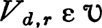 for each positive r. The uniformity
) if and only if 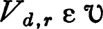 for each positive r. The uniformity  derived from d can then be characterized as the smallest uniformity which makes d uniformly continuous on X × X. It should be noticed that the pseudo-metric topology is identical with the uniform topology of
derived from d can then be characterized as the smallest uniformity which makes d uniformly continuous on X × X. It should be noticed that the pseudo-metric topology is identical with the uniform topology of  , because Vd,r[x] is the open r-sphere about x and the family of sets of this form is a base for the neighborhood system of x relative to both topologies.
, because Vd,r[x] is the open r-sphere about x and the family of sets of this form is a base for the neighborhood system of x relative to both topologies.
The crucial step in the metrization theorem for uniform spaces is provided by the following lemma.
12 METRIZATION LEMMA Let {Un, n ε w} be a sequence of subsets of X × X such that U0 = X × X, each Un contains the diagonal, and Un+1 ∘ Un+1 ∘ Un+1 ⊂ Un for each n. Then there is a non-negative real-valued junction d on X × X such that
(a)d{x,y) + d(y,z) ≧ d(x,z) for all x, y, and z; and
(b)Un ⊂ {(x,y): d{x,y) < 2−n} ⊂ Un−1 for each positive integer n.
If each Un is symmetric, then there is a pseudo-metric d satisfying condition (b).
PROOF Define a real-valued function f on X × X by letting f(x,y) = 2−n iff (x,y) ε Un−1 ~ Un and f(x,y) = 0 iff (x,y) belongs to each Un. The desired function d is constructed from its “first approximation” f by a chaining argument. For each x and each y in X let d(x,y) be the infimum of ∑ {f(xi,xi+1): i = 0, …, n} over all finite sequences x0, x1, …, xn+1 such that x = x0 and y = xn+1. It is evident that d satisfies the triangle inequality and since d(x,y) ≦ f(x,y) it follows that Un ⊂ {(x,y): d(x,y) < 2−n}. If each Un is symmetric, then f(x,y) = f(y,x) for each pair (x,y) and consequently d is a pseudo-metric in this case. The proof is completed by showing that f(x0,xn+1) ≦ 2∑{f(xi,xi+1): i = 0, …, n}, from which it will follow that, if d(x,y) < 2−n, then f(x,y) < 2−n+1, hence (x,y) ε Un−1, and {(x,y): d{x,y) < 2−n) ⊂ Un−1. The proof is by induction on n, and the inequality is clearly valid for n = 0. For convenience, call the number ∑{f(xi,xi+1): i = r, …, s} the length of the chain from r to s + 1, and let a be the length of the chain from 0 to n + 1. Let k be the largest integer such that the chain from 0 to k is of length at most a/2, and notice that the chain from k + 1 to n + 1 has length at most a/2. By the induction hypothesis, each of (x0,xk) and f(xk+1,xn+1) is at most 2(a/2) = a, and surely f(xk,Xk+1) is at most a. If m is the smallest integer such that 2−m ≦ a, then (x0,xn+1), (xk,xk+1) and (xk+1,xn+1) all belong to Um and therefore (x0,xn+1) ε Um−1 Hence f(x0,xn+1) ≦ 2−m+1 ≦ 2a and the lemma is proved. ∎
If a uniformity  for X has a countable base V0, V1, …, Vn …, then it is possible to construct by induction a family U0, U1, …, Un … such that each Un is symmetric, Un ∘ Un ∘ Un ⊂ Un−1 and Un ⊂ Vn for each positive integer n. The family of sets Un is then a base for
for X has a countable base V0, V1, …, Vn …, then it is possible to construct by induction a family U0, U1, …, Un … such that each Un is symmetric, Un ∘ Un ∘ Un ⊂ Un−1 and Un ⊂ Vn for each positive integer n. The family of sets Un is then a base for  , and upon applying the metrization lemma it follows that the uniform space is pseudo-metrizable. Hence:
, and upon applying the metrization lemma it follows that the uniform space is pseudo-metrizable. Hence:
13 METRIZATION THEOREM A uniform space is pseudo-metrizable if and only if its uniformity has a countable base.
This theorem clearly implies that a uniform space is metrizable iff it is Hausdorff and its uniformity has a countable base.
14 Notes To the best of my knowledge this theorem first appears in Alexandroff and Urysohn [2]. These authors were seeking a solution to the topological metrization problem (see 4.18), and the result they state is (approximately) : a topological Hausdorff space 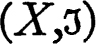 is metrizable iff there is a uniformity with a countable base such that  is the uniform topology. This is a rather unsatisfactory solution to the topological metrization problem but (with a slightly strengthened conclusion) is precisely the metrization theorem for uniform spaces. Chittenden [1] first proved a “uniform” form of 6.13 and his proof was later drastically simplified by A. H. Frink [1] and by Aronszajn [1]. The preceding proof is Bourbaki’s arrangement of Frink’s. The first appearance of 6.13 in the form just given occurs in André Weil’s classic monograph [1] in which he introduces the notion of uniform space. ∎
is the uniform topology. This is a rather unsatisfactory solution to the topological metrization problem but (with a slightly strengthened conclusion) is precisely the metrization theorem for uniform spaces. Chittenden [1] first proved a “uniform” form of 6.13 and his proof was later drastically simplified by A. H. Frink [1] and by Aronszajn [1]. The preceding proof is Bourbaki’s arrangement of Frink’s. The first appearance of 6.13 in the form just given occurs in André Weil’s classic monograph [1] in which he introduces the notion of uniform space. ∎
A uniformity for a set X may be derived from a family P of pseudo-metrics in the following fashion. Letting Vp,r = {(x,y): p(x,y) < r}, the family of all sets of the form Vp,r for p in P and r positive is the subbase for a uniformity  for X. This uniformity
for X. This uniformity  is defined to be the uniformity generated by P. The uniformity may be described in several instructive ways. According to 6.11 a pseudo-metric p is uniformly continuous on X × X relative to the product uniformity derived from
is defined to be the uniformity generated by P. The uniformity may be described in several instructive ways. According to 6.11 a pseudo-metric p is uniformly continuous on X × X relative to the product uniformity derived from  iff for each positive r. Consequently the uniformity generated by P is the smallest uniformity which makes each member p of P uniformly continuous on X × X. Another description: For a fixed member p of P the family of all sets Vp,r for r positive is a base for the uniformity of the pseudo-metric space (X,p). If
iff for each positive r. Consequently the uniformity generated by P is the smallest uniformity which makes each member p of P uniformly continuous on X × X. Another description: For a fixed member p of P the family of all sets Vp,r for r positive is a base for the uniformity of the pseudo-metric space (X,p). If  is a uniformity for X, then the identity map of 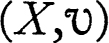 into (X,p) is uniformly continuous iff for each positive r. It follows that the uniformity
is a uniformity for X, then the identity map of 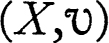 into (X,p) is uniformly continuous iff for each positive r. It follows that the uniformity  is the smallest such that for each p in P the identity map of X into (X,p) is uniformly continuous. This fact yields yet another description. Let Z be the product 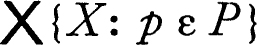 (that is, the product of X with itself as many times as there are members of P) and let f be the map of X into Z defined by f(x)p = x for each x in X and each p in P. Let the p-th coordinate space of this product be assigned the uniformity of the pseudo-metric p, and let Z have the product uniformity. The projection of Z into the p-th coordinate space is the identity map of X onto the pseudo-metric space (X,p), and it therefore follows from 6.10 that the uniformity generated by P is the smallest having the property that the map of X into Z is uniformly continuous. But f is one to one and is consequently a uniform isomorphism of X onto a subspace of the product of pseudo-metric spaces.
is the smallest such that for each p in P the identity map of X into (X,p) is uniformly continuous. This fact yields yet another description. Let Z be the product 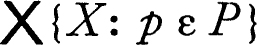 (that is, the product of X with itself as many times as there are members of P) and let f be the map of X into Z defined by f(x)p = x for each x in X and each p in P. Let the p-th coordinate space of this product be assigned the uniformity of the pseudo-metric p, and let Z have the product uniformity. The projection of Z into the p-th coordinate space is the identity map of X onto the pseudo-metric space (X,p), and it therefore follows from 6.10 that the uniformity generated by P is the smallest having the property that the map of X into Z is uniformly continuous. But f is one to one and is consequently a uniform isomorphism of X onto a subspace of the product of pseudo-metric spaces.
It is clearly of some importance to know which uniformities are generated by families of pseudo-metrics—this might be called the generalized metrization problem for uniform spaces. The solution to the problem is a direct application of the preceding results. Let be a uniform space and let P be the family of all pseudo-metrics for X which are uniformly continuous on X × X. The uniformity generated by P is smaller than  in view of 6.11. But the metrization lemma 6.12 shows that for each member U of
in view of 6.11. But the metrization lemma 6.12 shows that for each member U of  there is a member p of P such that {(x,y): p(x,y) < ¼) is contained in U, and hence ai is smaller than the uniformity generated by P. Thus:
there is a member p of P such that {(x,y): p(x,y) < ¼) is contained in U, and hence ai is smaller than the uniformity generated by P. Thus:
15 THEOREM Each uniformity for X is generated by the family of all pseudo-metrics which are uniformly continuous on X × X.
There is an interesting corollary to the foregoing theorem. It has already been observed that, if a uniformity  for X is generated by a family P of pseudo-metrics, then the space is uniformly isomorphic to a subspace of a product of pseudo-metric spaces, and it is possible to sharpen this result if is Hausdorff. The uniformity
for X is generated by a family P of pseudo-metrics, then the space is uniformly isomorphic to a subspace of a product of pseudo-metric spaces, and it is possible to sharpen this result if is Hausdorff. The uniformity  is the smallest which makes the identity map of X into the pseudo-metric space (X,p) uniformly continuous for each p in P. The space (X,p) is isometric under a map hp to a metric space (Xp,p*), by theorem 4.15, and it follows that
is the smallest which makes the identity map of X into the pseudo-metric space (X,p) uniformly continuous for each p in P. The space (X,p) is isometric under a map hp to a metric space (Xp,p*), by theorem 4.15, and it follows that  is the smallest uniformity making each of the maps hp uniformly continuous. If a map h of X into 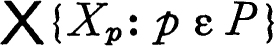 is defined by letting h(x)p = hp(x), then by 6.10 the uniformity
is the smallest uniformity making each of the maps hp uniformly continuous. If a map h of X into 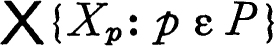 is defined by letting h(x)p = hp(x), then by 6.10 the uniformity  is the smallest such that h is uniformly continuous. If is Hausdorff, then h must be one to one, and in this case h is a uniform isomorphism. The preceding theorem then implies the following result (Weil [1]).
is the smallest such that h is uniformly continuous. If is Hausdorff, then h must be one to one, and in this case h is a uniform isomorphism. The preceding theorem then implies the following result (Weil [1]).
16 THEOREM Each uniform space is uniformly isomorphic to a subspace of the product of pseudo-metric spaces and each uniform Hausdorff space is uniformly isomorphic to a subspace of the product of metric spaces.
The preceding theorem yields a characterization of those topologies which can be the uniform topology for some uniformity, for a topological space is completely regular if and only if it is homeomorphic to a subspace of a product of pseudo-metrizable spaces (4.L).
17 COROLLARY A topology  for a set X is the uniform topology for some uniformity for X if and only if the topological space is completely regular.
for a set X is the uniform topology for some uniformity for X if and only if the topological space is completely regular.
The remainder of this section is devoted to a clarification of the relationship between uniformities and pseudo-metrics. A family P of pseudo-metrics for a set X is said to be a gage iff there is a uniformity  for X such that P is the family of all pseudo-metrics which are uniformly continuous on X × X relative to the product uniformity derived from
for X such that P is the family of all pseudo-metrics which are uniformly continuous on X × X relative to the product uniformity derived from  . The family P is called the gage of the uniformity
. The family P is called the gage of the uniformity  and
and  is the uniformity of P (
is the uniformity of P ( is generated by P according to 6.15). Every family of pseudo-metrics generates a uniformity; it will also be said to generate the gage of this uniformity. A direct description of the gage generated by a family P of pseudo-metrics is possible. The family of all sets of the form Vp,r for p in P and r positive is a subbase for the uniformity of the gage, and hence a pseudo-metric q is uniformly continuous on the product iff for each positive number s the set Vq,s contains some finite intersection of sets Vp,r for p in P. This remark establishes the following proposition.
is generated by P according to 6.15). Every family of pseudo-metrics generates a uniformity; it will also be said to generate the gage of this uniformity. A direct description of the gage generated by a family P of pseudo-metrics is possible. The family of all sets of the form Vp,r for p in P and r positive is a subbase for the uniformity of the gage, and hence a pseudo-metric q is uniformly continuous on the product iff for each positive number s the set Vq,s contains some finite intersection of sets Vp,r for p in P. This remark establishes the following proposition.
18 THEOREM Let P be a family of pseudo-metrics for a set X and let Q be the gage generated by P. Then a pseudo-metric q belongs to Q if and only if for each positive number s there is a positive number r and a finite subfamily p1 …, pn of P such that 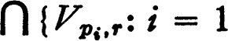, 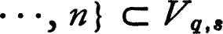
Each concept which is based on the notion of a uniformity can be described in terms of a gage because each uniformity is completely determined by its gage. The following theorem is a dictionary of such descriptions. Recall that p-dist (x,A) = inf{p(x,y):y ε A} is the p-distance from a point x to a set A.
19 THEOREM Let be a uniform space and let P be the gage of  . Then:
. Then:
(a)The family of all sets Vp,r for p in P and r positive is a base for the uniformity  .
.
(b)The closure relative to the uniform topology of a subset A of X is the set of all x such that p-dist (x,A) = 0 for each p in P.
(c)The interior of a set A is the set of all points such that for some p in P and some positive number r the sphere Vp,r[x] ⊂ A.
(d)Suppose P′ is a subfamily of P which generates P. A net {Sn, n ε D} in X converges to a point s if and only if {p(Sn, s), n ε D} converges to zero for each p in P′,
(e)A junction f on X to a uniform space is uniformly continuous if and only if for each member q of the gage Q of  it is true that q ∘ f2 ε P. (Recall f2(x,y) = (f(x),f(y)).)
it is true that q ∘ f2 ε P. (Recall f2(x,y) = (f(x),f(y)).)
Equivalently, f is uniformly continuous if and only if for each q in Q and each positive number s there is p in P and r positive such that, if p(x,y) < r, then q(f(x),f(y)) < s.
(f)If 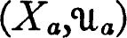 is a uniform space for each member a of an index set A and Pa is the gage of 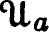 then the gage of the product uniformity for 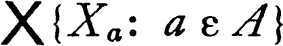 is generated by all pseudo-metrics of the form q(x,y) = pa(xa,ya) for a in A and pa in Pa.
The proof is omitted. It is a straightforward application of earlier results.
COMPLETENESS
This section is devoted to a number of elementary theorems based on the concept of a Cauchy net. A uniform space will be called complete iff each Cauchy net in the space converges to some point. The two most useful results of the section state that the product of complete spaces is complete, and that a uniformly continuous function f to a complete Hausdorff space has a uniformly continuous extension whose domain is the closure of the domain of f.
It will be supposed throughout that X is a set,  is a uniformity for X, and P is the gage of
is a uniformity for X, and P is the gage of  (that is, P is the family of all pseudo-metrics for X which are uniformly continuous on X × X). The definitions will be given in terms of both
(that is, P is the family of all pseudo-metrics for X which are uniformly continuous on X × X). The definitions will be given in terms of both  and P, and the proofs use the formulation which is most convenient for the problem under consideration. The set {(x,y): p(x,y) < r} will be denoted by Vp,r.
and P, and the proofs use the formulation which is most convenient for the problem under consideration. The set {(x,y): p(x,y) < r} will be denoted by Vp,r.
A net {Sn, n ε D} in the uniform space is a Cauchy net iff for each member U of  there is N in D such that (Sm,Sn) ε U whenever both m and n follow N in the ordering of D. This definition may be rephrased in terms of a net in X × X. In this form it is stated: the net {Sn, n ε D} is a Cauchy net iff the net {(Sm,Sn), (m,n) ε D × D} is eventually in each member of
there is N in D such that (Sm,Sn) ε U whenever both m and n follow N in the ordering of D. This definition may be rephrased in terms of a net in X × X. In this form it is stated: the net {Sn, n ε D} is a Cauchy net iff the net {(Sm,Sn), (m,n) ε D × D} is eventually in each member of  . (It is understood that D × D is given the product ordering.) The family of all sets of the form Vp,r for p in the gage P and r positive is a base for the uniformity
. (It is understood that D × D is given the product ordering.) The family of all sets of the form Vp,r for p in the gage P and r positive is a base for the uniformity  , and it follows that {Sn, n ε D) is a Cauchy net iff {(Sm,Sn), {m,n) ε D × D} is eventually in each set of the form Vp,r. In other words, {Sn, n ε D} is a Cauchy net if and only if {p(Sm,Sn), (m,n) ε D × D} converges to zero for each pseudo-metric p belonging to the gage P.
, and it follows that {Sn, n ε D) is a Cauchy net iff {(Sm,Sn), {m,n) ε D × D} is eventually in each set of the form Vp,r. In other words, {Sn, n ε D} is a Cauchy net if and only if {p(Sm,Sn), (m,n) ε D × D} converges to zero for each pseudo-metric p belonging to the gage P.
There is a simple lemma about Cauchy nets which is used often enough to deserve a formal statement.
20 LEMMA A net {Sn, n ε D} in a uniform space is a Cauchy net if and only if either of the following statements is true.
(a)The net {(Sm,Sn), (m,n) ε D × D) is eventually in each member of some subbase for the uniformity  .
.
(b)The net {p(Sm,Sn), (m,n) ε D × D} converges to zero for each p in some family of pseudo-metrics which generates the gage P.
PROOF If a family Q of pseudo-metrics generates P, then the family of all Vp,r for p in Q and r positive is a subbase for the uniformity, so that the proof of (b) reduces to that of (a). To prove (a) notice that, if a net (for example {(Sm,Sn), (m,n) ε D × D}) is eventually in each of a finite number of sets, it is then eventually in their intersection. ∎
The following proposition relates Cauchy nets to convergence relative to the uniform topology.
21 THEOREM Each net which converges to a point relative to the uniform topology is a Cauchy net. A Cauchy net converges to each of its cluster points.
PROOF If {Sn, n ε D} converges to a point s, then {d{Sn,s), n ε D} converges to zero for each member d of the gage P. Since d(Sm,Sn) ≦ d(Sm,s) + d(Sn,s), it follows that {d(Sm,Sn), (m,n) ε D × D} converges to zero and the net is therefore a Cauchy net. Suppose that {Sn, n ε D} is a Cauchy net and s is a cluster point. Then for d in P and r positive there is m in D such that, if m ≧ N and n ≧ N, then d(Sm,Sn) < r/2. Since s is a cluster point, there is p in D such that d(Sp,s) ≦ r/2 and p ≦ N. Then d(Sn,s) ≦ d(Sn,Sp) + d(Sp,s) < r if n ≧ N, and it follows that the net converges to s. ∎
A uniform space is complete iff every Cauchy net in the space converges to a point of the space. Evidently each closed sub-space of a complete space is complete. If is Haus-dorff and is a complete subspace, then Y is closed in X, for a net in Y which converges to a point x of X is necessarily a Cauchy net, and x is the unique limit point. This obvious result is one of the most useful facts about completeness.
22 THEOREM A closed subspace of a complete space is complete, and a complete subspace of a Hausdorff uniform space is closed.
Before proceeding it may be worth while to mention several examples of complete spaces. If the uniformity  is the largest possible uniformity for X (that is, consists of all subsets of X × X which contain the diagonal), then is complete. The smallest uniformity for X also yields a complete space. If a uniform space is compact relative to the uniform topology, then it is complete, for every net has a cluster point and consequently by theorem 6.21 each Cauchy net converges to some point. The space of real numbers is complete relative to the usual uniformity. This may be seen by verifying that each Cauchy net is eventually in some bounded subset A of the space of real numbers and is therefore eventually in the compact set A−.
is the largest possible uniformity for X (that is, consists of all subsets of X × X which contain the diagonal), then is complete. The smallest uniformity for X also yields a complete space. If a uniform space is compact relative to the uniform topology, then it is complete, for every net has a cluster point and consequently by theorem 6.21 each Cauchy net converges to some point. The space of real numbers is complete relative to the usual uniformity. This may be seen by verifying that each Cauchy net is eventually in some bounded subset A of the space of real numbers and is therefore eventually in the compact set A−.
There is a characterization of completeness which is suggestive of compactness. Recall that a family of sets has the finite intersection property iff no finite intersection of members of the family is void, and a topological space is compact iff the intersection of the members of each family of closed sets with the finite intersection property is non-void. To describe completeness another qualification is put on the family. A family  of subsets of a uniform space contains small sets iff for each U in
of subsets of a uniform space contains small sets iff for each U in  there is a member A of
there is a member A of  such that A is a subset of U[x] for some point x. Another formulation is: for each U in
such that A is a subset of U[x] for some point x. Another formulation is: for each U in  there is A in
there is A in  such that A × A ⊂ U. In terms of the gage P of the uniform space, a family
such that A × A ⊂ U. In terms of the gage P of the uniform space, a family  contains small sets iff for each positive r and each d in P there is A in
contains small sets iff for each positive r and each d in P there is A in  such that the d-diameter of A is less than r. We omit the proof that these three statements are equivalent.
such that the d-diameter of A is less than r. We omit the proof that these three statements are equivalent.
23 THEOREM * A uniform space is complete if and only if each family of closed sets which has the finite intersection property and contains small sets has a non-void intersection.
PROOF Let be a complete uniform space and  a family of closed sets which has the finite intersection property and contains small sets. If
a family of closed sets which has the finite intersection property and contains small sets. If  is the family of all finite intersections of members of
is the family of all finite intersections of members of  , then
, then  is directed by ⊂, and for each F in
is directed by ⊂, and for each F in  we may choose a point xF in F. The net 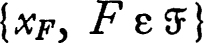 is a Cauchy net because, if A and B follow a member F of
we may choose a point xF in F. The net 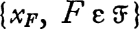 is a Cauchy net because, if A and B follow a member F of  in the ordering ⊂ (that is, A ⊂ F and B ⊂ F), then xA and xB belong to F, and
in the ordering ⊂ (that is, A ⊂ F and B ⊂ F), then xA and xB belong to F, and  contains small sets. Consequently, 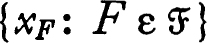 converges to a point and since the net is eventually in each member of
contains small sets. Consequently, 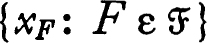 converges to a point and since the net is eventually in each member of  the point must belong to every member of
the point must belong to every member of  . Hence the intersection 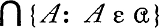 is non-void. To prove the converse let {xn, n ε D} be a Cauchy net, and for each n in D let An be the set of all points xm for m ≧ n. Then the family
. Hence the intersection 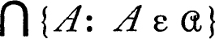 is non-void. To prove the converse let {xn, n ε D} be a Cauchy net, and for each n in D let An be the set of all points xm for m ≧ n. Then the family  of all sets of the form An has the finite intersection property, and since the net is Cauchy the family a contains small sets. There is hence a point y which belongs to the intersections of the closures, 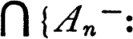 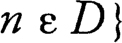 , and, according to 2.7, the point y is a cluster point of the net {xn, n ε D}. Since {xn, n ε D} is a Cauchy net it converges to y. ∎
of all sets of the form An has the finite intersection property, and since the net is Cauchy the family a contains small sets. There is hence a point y which belongs to the intersections of the closures, 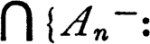 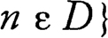 , and, according to 2.7, the point y is a cluster point of the net {xn, n ε D}. Since {xn, n ε D} is a Cauchy net it converges to y. ∎
One might suspect that a uniform space satisfying the first axiom of countability would be complete if every Cauchy sequence in the space converged to a point of the space. Unfortunately this suspicion is unfounded, but the following feeble result is correct.
24 THEOREM A pseudo-metrizable uniform space is complete if and only if every Cauchy sequence in the space converges to a point.
PROOF If a uniform space is complete, then each Cauchy net in X, and in particular each Cauchy sequence in X, converges to a point. On the other hand, suppose that (X,d) is a pseudo-metric space such that every Cauchy sequence converges to a point, and that  is a family of closed subsets of X which has the finite intersection property and contains small sets. For each non-negative integer n select a member An of
is a family of closed subsets of X which has the finite intersection property and contains small sets. For each non-negative integer n select a member An of  which is of diameter less than 2−n and select a point xn belonging to An. If m and n are large, then d(xm,xn) is small because xm and xn belong to Am and An respectively, these two sets intersect, and each has small diameter. Hence {xn, n ε ω} is a Cauchy sequence and therefore converges to a point y of X. If B is an arbitrary member of a, then dist (xn,B) < 2−n because B intersects An, and it follows that y belongs to the closure of B. Since
which is of diameter less than 2−n and select a point xn belonging to An. If m and n are large, then d(xm,xn) is small because xm and xn belong to Am and An respectively, these two sets intersect, and each has small diameter. Hence {xn, n ε ω} is a Cauchy sequence and therefore converges to a point y of X. If B is an arbitrary member of a, then dist (xn,B) < 2−n because B intersects An, and it follows that y belongs to the closure of B. Since  is a family of closed sets y belongs to every member of
is a family of closed sets y belongs to every member of  . ∎
. ∎
The usual method of proving completeness consists in showing the space in question is uniformly isomorphic to a closed sub-space of a product of complete spaces and then appealing to the following theorem. The proof of this theorem requires the fact that the image of a Cauchy net under a uniformly continuous map is a Cauchy net—a fact which is evident from the definition.
25 THEOREM The product of uniform spaces is complete if and only if each coordinate space is complete.
A net in the product is a Cauchy net if and only if its projection into each coordinate space is a Cauchy net.
PROOF Suppose that 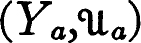 is a complete uniform space for each member a of an index set A. For each a the projection of a Cauchy net into Ya is a Cauchy net and hence converges to a point, say, ya. Then the net in the product converges to the point y with a-th coordinate ya and consequently the product is complete. The simple proof of the converse is omitted.
If {xn, n ε D} is a net in the product which projects into a Cauchy net in each coordinate space, then for each member U of the net {(xm,xn), (m,n) ε (D × D)} is eventually in the inverse under projection of U. That is, {(xm,xn), (m,n) ε (D × D)} is eventually in {(x,z): (xa,za) ε U}. Since the family of sets of this form is a subbase for the product uniformity it follows (6.20) that {xn, n ε D} is a Cauchy net. ∎
A function f is uniformly continuous on a subset A of a uniform space iff its restriction to A, f | A, is uniformly continuous with respect to the relativized uniformity. If the range space is complete and Hausdorff* and f is uniformly continuous on its domain A, then there is a unique uniformly continuous extension whose domain is the closure of A.
26 THEOREM Let f be a function whose domain is a subset A of a uniform space and whose values lie in a complete Hausdorff uniform space . If f is uniformly continuous on A, then there is a unique uniformly continuous extension f− of f whose domain is the closure of A.
PROOF The function f is a subset of X × Y (we do not distinguish between a function and its graph) and the desired extension is the closure f− of f in X × Y. (A pair (x,y) belongs to f− iff there is a net in A converging to x such that the image net converges to y.) The domain of f− is evidently the closure of A. We will show that, if W is a member of  , then there is U in ∘a such that, if (x,y) and (u,v) are members of f− and x ε U[u], then y ε W[v]. Since Y is Hausdorff this will show that f− is a function and that f− is uniformly continuous. Choose a member V of
, then there is U in ∘a such that, if (x,y) and (u,v) are members of f− and x ε U[u], then y ε W[v]. Since Y is Hausdorff this will show that f− is a function and that f− is uniformly continuous. Choose a member V of  which is closed and symmetric and such that V ∘ V ⊂ W and choose a member U of
which is closed and symmetric and such that V ∘ V ⊂ W and choose a member U of  which is open and symmetric and such that f[U[x]] ⊂ V[f(x)} for each x in A; suppose (x,y) and (u,v) belong to f− and x ε U[u]. Then the intersection of U[x] and U[u] is open and there is consequently z in A such that both x and u belong to U[z]. Both y and v belong to the closure of f[U[z]], by the definition of f−, and hence both y and v belong to V[f(z)]. Hence (y,v) ε V ∘ V ⊂ W and y ε W[v]. ∎
which is open and symmetric and such that f[U[x]] ⊂ V[f(x)} for each x in A; suppose (x,y) and (u,v) belong to f− and x ε U[u]. Then the intersection of U[x] and U[u] is open and there is consequently z in A such that both x and u belong to U[z]. Both y and v belong to the closure of f[U[z]], by the definition of f−, and hence both y and v belong to V[f(z)]. Hence (y,v) ε V ∘ V ⊂ W and y ε W[v]. ∎
COMPLETION
It is the purpose of this section to show that each uniform space is uniformly isomorphic to a dense subspace of a complete uniform space. It is therefore possible to adjoin “ideal elements” to a uniform space in such a way as to obtain a complete uniform space. The procedure is suggestive of the compactification process of chapter 5, but there is one significant difference: the completion of a uniform space is (essentially) unique.
For a metric space X it is possible to find a complete metric space X* such that X is isometric to a dense subspace of X* (not just uniformly isomorphic). We base the general construction of a completion on this preliminary result.
27 THEOREM Each metric (or pseudo-metric) space can be mapped by a one-to-one isometry onto a dense subset of a complete metric (respectively pseudo-metric) space.
PROOF It is only necessary to prove the theorem for a pseudo-metric space (X,d), since the corresponding result for metric spaces then follows from 4.15. Let X* be the class of all Cauchy sequences in X, and for members S and T of X* let d*(S,T) be the limit of d(Sm,Tm) as m becomes large (formally, the limit of {d(Sm,Tm), m ε ω}). It is easy to verify that d* is a pseudo-metric for X*. Let F be the map which carries each point x of X into the sequence which is constantly equal to x; that is, F(x)n = x for all n. Evidently F is a one-to-one isometry and it remains to prove that F[X] is dense in X* and X* is complete. The first of these statements is almost self-evident; if S ε X* and n is large, then F(Sn) is near S. To show X* complete, first observe that it is sufficient to show that each Cauchy sequence in F[X] converges to a point of X* because F[X] is dense in X*. Finally, each Cauchy sequence in F[X] is of the form F ∘ S = {F(Sn), n ε ω}, where S is a Cauchy sequence in X, and F ∘ S converges in X* to the member S of X*. ∎
Each uniform space is uniformly isomorphic to a subspace of a product of pseudo-metric spaces, and each Hausdorff uniform space is uniformly isomorphic to a product of metric spaces, by 6.16. The preceding theorem implies that a metric or pseudo-metric space is uniformly isomorphic to a subspace of a complete space of the same sort. It follows without difficulty that:
28 THEOREM Each uniform space is uniformly isomorphic to a dense subspace of a complete uniform space. Each Hausdorff uniform space is uniformly isomorphic to a dense subspace of a complete Hausdorff uniform space.
A completion of a uniform space is a pair, 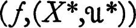 where 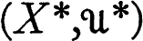 is a complete uniform space and f is a uniform isomorphism of X into a dense subspace of X*. The completion is Hausdorff iff is a Hausdorff uniform space. The foregoing theorem can then be stated: Each (Hausdorff) uniform space has a (Hausdorff) completion.
There is a uniqueness property for Hausdorff completions. If f and g are uniform isomorphisms of X onto dense subspaces of complete Hausdorff uniform spaces X* and X**, then both g ∘ f−1 and f ∘ g−1 have uniformly continuous extensions to all of X* and X** respectively, by 6.26. It follows that the extension of g ∘ f−1 is a uniform isomorphism of X* onto X**. Stated roughly: the Hausdorff completion of a Hausdorff uniform space is unique to a uniform isomorphism.
COMPACT SPACES
Each completely regular topology  for a set X is the uniform topology for some uniformity
for a set X is the uniform topology for some uniformity  , but the uniformity is usually not unique. If is compact and regular, then it turns out that there is precisely one uniformity whose topology is
, but the uniformity is usually not unique. If is compact and regular, then it turns out that there is precisely one uniformity whose topology is  . In this case the topology determines the uniformity, topological invariants are uniform invariants, and the theory takes a particularly simple form. This section is devoted to a proof of the uniqueness theorem just quoted and to two other propositions. As before, we use either the uniformity of a space or the corresponding gage of uniformly continuous pseudo-metrics as convenience dictates.
. In this case the topology determines the uniformity, topological invariants are uniform invariants, and the theory takes a particularly simple form. This section is devoted to a proof of the uniqueness theorem just quoted and to two other propositions. As before, we use either the uniformity of a space or the corresponding gage of uniformly continuous pseudo-metrics as convenience dictates.
29 THEOREM If is a compact uniform space, then every neighborhood of the diagonal Δ in X × X is a member of  and every pseudo-metric which is continuous on X × X is a member of the gage of
and every pseudo-metric which is continuous on X × X is a member of the gage of  .
.
PROOF Let  be the family of closed members of
be the family of closed members of  and let V be an arbitrary open neighborhood of Δ. If 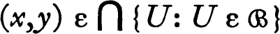, then, since
and let V be an arbitrary open neighborhood of Δ. If 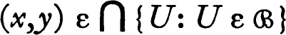, then, since  is a base for
is a base for  , y belongs to every neighborhood of x and hence (x,y) belongs to every neighborhood of Δ. It follows that 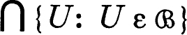 is a subset of V. Since each member U of
, y belongs to every neighborhood of x and hence (x,y) belongs to every neighborhood of Δ. It follows that 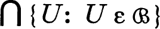 is a subset of V. Since each member U of  is compact and V is open the intersection of some finite subfamily of
is compact and V is open the intersection of some finite subfamily of  is also a subset of V and hence .
is also a subset of V and hence .
If a pseudo-metric d for X is continuous on X × X, then for each positive r the set {(x,y): d(x,y) < r) is a neighborhood of the diagonal. Hence d is uniformly continuous and therefore belongs to the gage of  . ∎
. ∎
Each compact regular topological space is completely regular and its topology is therefore the uniform topology for some uniformity. This uniformity has just been identified.
30 COROLLARY If is a compact regular topological space, then the family of all neighborhoods of the diagonal Δ is a uniformity for X and  is the uniform topology.
is the uniform topology.
There is another corollary.
31 THEOREM Each continuous function on a compact uniform space to a uniform space is uniformly continuous.
PROOF If f is a continuous function on X to Y, then f2, where f2(x,y) = (f(x),f(x)), is a continuous function on X × X to Y × Y. Consequently if d belongs to the gage of Y the composition d ∘ f2 is continuous on X × X. It follows from theorem 6.29 that d ∘ f2 belongs to the gage of X, and hence the function f is uniformly continuous. ∎
Each compact uniform space can be written as the union of a finite number of small sets, in the sense that for each pseudo-metric d belonging to the gage of  and each positive r there is a finite cover of X by sets of d-diameter less than r. This is a direct consequence of compactness, since X can be covered by a finite number of r/3 spheres about points and each of these is of diameter less than r. A uniform space is totally bounded (or precompact) iff X is the union of a finite number of sets of d-diameter less than r for each pseudo-metric d of the gage of
and each positive r there is a finite cover of X by sets of d-diameter less than r. This is a direct consequence of compactness, since X can be covered by a finite number of r/3 spheres about points and each of these is of diameter less than r. A uniform space is totally bounded (or precompact) iff X is the union of a finite number of sets of d-diameter less than r for each pseudo-metric d of the gage of  and each positive r. In terms of
and each positive r. In terms of  this can be stated: for each U in
this can be stated: for each U in  the set X is the union of a finite number of sets B such that B × B ⊂ U, or, equivalently, for each U in
the set X is the union of a finite number of sets B such that B × B ⊂ U, or, equivalently, for each U in  there is a finite subset F of X such that U[F] = X. A subset Y of a uniform space is called totally bounded iff Y, with the relativized uniformity, is totally bounded.
there is a finite subset F of X such that U[F] = X. A subset Y of a uniform space is called totally bounded iff Y, with the relativized uniformity, is totally bounded.
There is a simple but very useful relation between compactness and total boundedness.
32 THEOREM A uniform space is totally bounded if and only if each net in X has a Cauchy subnet.
Consequently a uniform space is compact if and only if it is totally bounded and complete.
PROOF Suppose S is a net in a totally bounded uniform space . The existence of a Cauchy subnet is an obvious consequence of problem 2.J, but we sketch the proof without using the earlier result. Let  be the family of all subsets A of X such that S is frequently in A. Then and by the maximal principle 0.25 there is a maximal subfamily
be the family of all subsets A of X such that S is frequently in A. Then and by the maximal principle 0.25 there is a maximal subfamily  of
of  which contains {X} and has the finite intersection property. Because of maximality it is true that, if a finite union B1 ∪ … ∪ Bn of members of
which contains {X} and has the finite intersection property. Because of maximality it is true that, if a finite union B1 ∪ … ∪ Bn of members of  belongs to
belongs to  , then for some i (see 2.I for details). Since X is totally bounded it may be covered by a finite number of small sets, and it follows that
, then for some i (see 2.I for details). Since X is totally bounded it may be covered by a finite number of small sets, and it follows that  contains small sets. Finally, it follows from 2.5 that there is a subnet of S which is eventually in each member of
contains small sets. Finally, it follows from 2.5 that there is a subnet of S which is eventually in each member of  , and evidently this subnet is Cauchy.
, and evidently this subnet is Cauchy.
If is not totally bounded, then for some U in  and for every finite subset F of X it is true that U[F] ≠ X. It follows that one may find by induction a sequence {xn, n ε ω} such that if p < n. Clearly the sequence {xn, n ε ω} has no Cauchy subnet.
and for every finite subset F of X it is true that U[F] ≠ X. It follows that one may find by induction a sequence {xn, n ε ω} such that if p < n. Clearly the sequence {xn, n ε ω} has no Cauchy subnet.
Finally, if is complete and totally bounded, then each net has a subnet which converges to a point of X and hence the space is compact. It has already been observed that a compact space is complete. ∎
There is one other very useful lemma concerning compact spaces. The proposition is an extension of the Lebesgue covering lemma 5.26. A cover of a subset A of a uniform space is a uniform cover iff there is a member U of at such that the set U[x] is a subset of some member of the cover for every x in A (that is, the family of U[x] for x in A refines the cover). In terms of the gage of the uniformity  , a cover of A is uniform iff there is a member d of the gage and a positive number r such that the open sphere of d-radius r about each point of A is contained in some member of the cover.
, a cover of A is uniform iff there is a member d of the gage and a positive number r such that the open sphere of d-radius r about each point of A is contained in some member of the cover.
33 THEOREM Each open cover of a compact subset of a uniform space is a uniform cover.
In particular, each neighborhood of a compact subset A contains a neighborhood of the form U[A] where U is a member of the uniformity.
PROOF Let  be an open cover of the compact subset A of the uniform space . Then for each x in A there is U in
be an open cover of the compact subset A of the uniform space . Then for each x in A there is U in  such that U[x] is a subset of some member of
such that U[x] is a subset of some member of  , and hence there is V in
, and hence there is V in  such that V ∘ V[x] is a subset of some member of
such that V ∘ V[x] is a subset of some member of  . Choose a finite number of members x1, …, xn of A and V1, …, Vn of
. Choose a finite number of members x1, …, xn of A and V1, …, Vn of  such that the sets Vi[xi] cover A and for each i it is true that Vi ∘ Vi[xi] is a subset of some member of
such that the sets Vi[xi] cover A and for each i it is true that Vi ∘ Vi[xi] is a subset of some member of  . Finally, let . Then for each point y of A for some i the point y belongs to Vi[xi] and hence W[y] ⊂ W ∘ Vi[xi] ⊂ Vi ∘ Vi [xi]. Consequently W[y] is a subset of some member of et. ∎
. Finally, let . Then for each point y of A for some i the point y belongs to Vi[xi] and hence W[y] ⊂ W ∘ Vi[xi] ⊂ Vi ∘ Vi [xi]. Consequently W[y] is a subset of some member of et. ∎
FOR METRIC SPACES ONLY
This section is devoted to two propositions concerning complete metric spaces. The results are among the most useful consequences of completeness, and it is unfortunate that no generalization to complete uniform spaces seems possible. The first proposition is the classic theorem of Baire on category; this theorem and one or two related results occupy most of the section. The last theorem of the section states that the image under a continuous uniformly open map of a complete metric space is again complete, provided the range space is Hausdorff. The proof relies on a lemma which we state in considerably more general form than is necessary for this proposition. The lemma (essentially a formalization of an argument of Banach) also yields directly the closed graph and open mapping theorems of normed linear space theory. (See problem 6.R.)
34 THEOREM (BAIRE) Let X be either a complete pseudo-metric space or a locally compact regular space. Then the intersection of a countable family of open dense subsets of X is itself dense in X.
PROOF We prove the theorem for locally compact regular spaces, adding in parentheses the modifications necessary to establish it for a complete pseudo-metric space. Suppose that {Gn, n ε ω] is a sequence of dense open subsets of X and that U is an arbitrary open non-void subset of X. It must be shown that is non-void. To this end choose inductively an open set V0 such that V0− is a compact subset of U ∩ G0 (such that V0− is a subset of U ∩ G0 and has diameter less than one), and then for each positive integer n choose Vn such that Vn− is a subset of Vn−x ∩ Gn (and the diameter of Vn is less than 1/n). This choice is possible because Gn is dense and open. The family of all sets Vn− for non-negative integers n has the finite intersection property, consists of closed sets and V0− is compact (the family contains small sets). Hence is non-void, and since Vn+1− ⊂ U ∩ Gn it follows that is non-void. ∎
It should be remarked that the Baire theorem is a hybrid in that a topological conclusion (the intersection of a countable number of dense open sets is dense) is deduced from a non-topological premise (that the space is complete pseudo-metric). There is a purely topological statement which is equivalent. If is a topological space such that for some pseudo-metric d for X the space (X,d) is complete and  is the pseudo-metric topology, then the same conclusion holds. (Topological spaces for which there exists such a complete metric have been characterized in a different way, as noted in 6.K.)
is the pseudo-metric topology, then the same conclusion holds. (Topological spaces for which there exists such a complete metric have been characterized in a different way, as noted in 6.K.)
A terminology has been devised which is very convenient in discussing questions related to the Baire theorem. A subset A of a topological space is nowhere dense in X iff the interior of the closure of A is void; otherwise stated, A is nowhere dense in X iff the open set X ~ A− is dense in X. It is evident that the finite union of nowhere dense sets is nowhere dense. A subset A of X is meager in X or of the first category in X iff A is the union of a countable family of nowhere dense sets. The Baire theorem can then be stated: the complement of a meager subset of a complete metric space is dense. (The complement of a meager set is sometimes called co-meager or residual in X.)
A set A is non-meager or of the second category in X iff it is not meager in X. The following result is a sort of a localization theorem. From the fact that a set A is non-meager we deduce the existence of points x such that A intersects each neighborhood of x in a non-meager set. It is sometimes said that A is of the second category at such points.
35 THEOREM Let A be a subset of a topological space X and let M(A) be the union of all open sets V such that V ∩ A is meager in X. Then A ∩ M(A)− is meager in X.
PROOF Let  be a disjoint family of open sets which is maximal with respect to the property: if , then U ∩ A is meager. Such a family
be a disjoint family of open sets which is maximal with respect to the property: if , then U ∩ A is meager. Such a family  exists because of the maximal principle 0.25. Let . The proof reduces to showing that W ∩ A is meager, for if this is known then A ∩ W− is meager because W− ~ W is nowhere dense, and from the maximality of
exists because of the maximal principle 0.25. Let . The proof reduces to showing that W ∩ A is meager, for if this is known then A ∩ W− is meager because W− ~ W is nowhere dense, and from the maximality of  it follows that W− contains every open set V such that V ∩ A is meager. To show that W ∩ A is meager, for each U in
it follows that W− contains every open set V such that V ∩ A is meager. To show that W ∩ A is meager, for each U in  write U ∩ A in the form where Un is nowhere dense. Then, because the family
write U ∩ A in the form where Un is nowhere dense. Then, because the family  is disjoint, the set is nowhere dense for each non-negative integer n. Hence W ∩ A is meager. ∎
is disjoint, the set is nowhere dense for each non-negative integer n. Hence W ∩ A is meager. ∎
An important consequence of the preceding theorem is that if a subset A of a topological space is non-meager then there is a non-void open set V such that the intersection of A with every neighborhood of each point of V− is non-meager.
The concluding theorem of this chapter shows that completeness is preserved by certain mappings. A map of a uniform space into a uniform space is uniformly open iff for each U in  there is V in
there is V in  such that f [U[x]] ⊃ V[f(x)] for each x in X. It is not true that uniformly open maps preserve completeness for arbitrary uniform spaces; Köthe [1] has given an example of a complete linear topological space and a closed sub-space such that the quotient space is not complete. The theorem, like the Baire theorem, is peculiar to pseudo-metric spaces.
such that f [U[x]] ⊃ V[f(x)] for each x in X. It is not true that uniformly open maps preserve completeness for arbitrary uniform spaces; Köthe [1] has given an example of a complete linear topological space and a closed sub-space such that the quotient space is not complete. The theorem, like the Baire theorem, is peculiar to pseudo-metric spaces.
The proof of the theorem which is given here depends on a lemma which has other profound consequences (see 6.R.). The lemma concerns a relation R between points of a pseudo-metric space (X,d) and a uniform space ; that is, R is a subset of X × Y. Let Ur = {(x,y): d(x,y) < r}, so that Ur[x] is simply the r-sphere about x.
36 LEMMA Let R be a closed subset of the product of a complete pseudo-metric space (X,d) with the uniform space and suppose that for each positive r there is V in  such that R[Ur[x]]− contains V[y] for each (x,y) in R. Then for each r and each positive e it is true that R[Ur+e[x]] ⊃ R[Ur[x]]− ⊃ V[y].
such that R[Ur[x]]− contains V[y] for each (x,y) in R. Then for each r and each positive e it is true that R[Ur+e[x]] ⊃ R[Ur[x]]− ⊃ V[y].
PROOF The critical fact needed for the proof is: if A is a subset of X and v ε R[A]−, then there is a set B of arbitrarily small diameter such that v ε R[B]− and A ∩ B is not void. This is true because: if r is arbitrary, if V is a symmetric member of  such that R[Ur[x]]− ⊃ V[y] for each member (x,y) of R, if v′ is a point of R[A] such that v′ ε V[v], and if u is a point of A such that (u,v′) ε R, then v ε V[v′] ⊂ R[Ur[u]]−, and the diameter of Ur[u] is at most 2r.
such that R[Ur[x]]− ⊃ V[y] for each member (x,y) of R, if v′ is a point of R[A] such that v′ ε V[v], and if u is a point of A such that (u,v′) ε R, then v ε V[v′] ⊂ R[Ur[u]]−, and the diameter of Ur[u] is at most 2r.
The lemma is now established as follows. Suppose that v ε R[Ur[x]]−. It will be shown that v ε R[Ur+e[x]], which will complete the proof. Let A0 = Ur[x], and select inductively, for each positive integer n, a subset An of X such that v ε R[An]−, An ∩ An−1 is not void, and the diameter of An is less than e2−n. Since X is complete there is evidently a point u such that each neighborhood W of u contains some An (hence v ε R[W]−). Clearly d(x,u) < r + e. For each neighborhood W of u and each neighborhood Z of v it is true that R[W] intersects Z, and hence there is (u′,v′) in R with u′ in W and v′ in Z; that is, R ∩ (W × Z) is non-void. Since R is closed (u,v) ε R and the proof is complete. ∎
Suppose now that f is uniformly open and continuous, that X is complete and pseudo-metrizable, that Y is Hausdorff, and that Y* is a Hausdorff completion of Y. Then (the graph of) f is a subset of X × Y* which is closed because f is continuous, and satisfies the condition of the preceding lemma because the map of X into Y is uniformly open. Then the lemma implies that f is a uniformly open map of X into Y*. Finally, since f[X] contains V[f[X]] for some V in  , it must be true that f[X] is closed (and open) in Y*; hence f[X] is complete.
, it must be true that f[X] is closed (and open) in Y*; hence f[X] is complete.
37 COROLLARY Let f be a continuous uniformly open map of a complete pseudo-metrizable space into a Hausdorff uniform space. Then the range of the map f is complete.
PROBLEMS
AEXERCISE ON CLOSED RELATIONS
Let X and Y be topological spaces and let R be a closed subset of X × Y. If A is a compact subset of X, then R[A] is a closed subset of Y. (If , then A × {y} is contained in the open set (X × Y) ~ R, and theorem 5.12 may be applied.)
BEXERCISE ON THE PRODUCT OF TWO UNIFORM SPACES
Let and be uniform spaces and for each U in  and each V in
and each V in  let W(U,V) = {((x,y),(u,v)): (x,u) ε U and (y,u) ε V}.
let W(U,V) = {((x,y),(u,v)): (x,u) ε U and (y,u) ε V}.
(a) The family of sets of the form W(U,V) is a base for the product uniformity for X × Y.
(b) If R is a subset of X × Y, then .
(c) The closure of a subset R of X × Y is and }.
CA DISCRETE NON-METRIZABLE UNIFORM SPACE
It should be observed that a uniform space may fail to be metrizable even though the topology of  is metrizable. Let Ω0 be the set of all ordinals which are less than the first uncountable ordinal Ω, and for each member a of Ω0 let Ua = {(x,y): x = y or x ≧ a and y ≧ a}. Then the family of all sets of the form Ua is a base for a uniformity
is metrizable. Let Ω0 be the set of all ordinals which are less than the first uncountable ordinal Ω, and for each member a of Ω0 let Ua = {(x,y): x = y or x ≧ a and y ≧ a}. Then the family of all sets of the form Ua is a base for a uniformity  for Ω0 (observe that Ua = Ua ∘ Ua = Ua−1). The topology of this uniformity is the discrete topology and hence metrizable, but the uniform space is not metrizable.
for Ω0 (observe that Ua = Ua ∘ Ua = Ua−1). The topology of this uniformity is the discrete topology and hence metrizable, but the uniform space is not metrizable.
DEXERCISE: UNIFORM SPACES WITH A NESTED BASE
Let be a Hausdorff uniform space and suppose that a base  for
for  is linearly ordered by inclusion. Then either is metrizable or the intersection of every countable family of open subsets of X is open.
is linearly ordered by inclusion. Then either is metrizable or the intersection of every countable family of open subsets of X is open.
EEXAMPLE: A VERY INCOMPLETE SPACE (THE ORDINALS)
Let Ω0 be the set of all ordinals less than the first uncountable ordinal Ω, and let  be the order topology for Ω0. Then there is a unique uniformity for Ω0 whose topology is
be the order topology for Ω0. Then there is a unique uniformity for Ω0 whose topology is  and Ω0 is not complete relative to this uniformity. (Using the methods of problem 4.E show that, if U is an open subset of Ω0 × Ω0 which contains the diagonal, then for some x it is true that (y,z) ε U whenever y > x and z > x. Then show that a uniformity whose topology is
and Ω0 is not complete relative to this uniformity. (Using the methods of problem 4.E show that, if U is an open subset of Ω0 × Ω0 which contains the diagonal, then for some x it is true that (y,z) ε U whenever y > x and z > x. Then show that a uniformity whose topology is  must be identical with the relativized uniformity of the compact space Ω′ = {x: x ≦ Ω}.)
must be identical with the relativized uniformity of the compact space Ω′ = {x: x ≦ Ω}.)
Note This property of Ω0 was observed by Dieudonné [5]. Doss [1] has characterized topological spaces which, like Ω0, have a unique uniformity.
FTHE SUBBASE THEOREM FOR TOTAL BOUNDEDNESS
The uniform space analogue of Alexander’s theorem 5.6 on compact subbases is: Let be a uniform space such that for each member U of some subbase for  there is a finite cover A1, … , An of X such that Ai × Ai ⊂ U for each i. Then the space is totally bounded.
there is a finite cover A1, … , An of X such that Ai × Ai ⊂ U for each i. Then the space is totally bounded.
Consequently the product of uniform spaces is totally bounded if and only if each coordinate space is totally bounded.
The Tychonoff product theorem 5.13 for completely regular spaces may be derived from the preceding proposition and 6.32.
GSOME EXTREMAL UNIFORMITIES
(a) If is a Tychonoff space, then the uniformity of the Stone-Cech compactification of X, relativized to X, is the smallest uniformity such that each bounded real-valued continuous function is uniformly continuous.
(b) If is a completely regular space, then there is a largest uniformity  for X whose topology is
for X whose topology is  . This uniformity may be described alternately as the smallest which makes uniformly continuous each continuous map into a metric space, or each continuous map into a uniform space. Explicitly, V is a member of
. This uniformity may be described alternately as the smallest which makes uniformly continuous each continuous map into a metric space, or each continuous map into a uniform space. Explicitly, V is a member of  iff V is a neighborhood of the diagonal in X × X and there is a sequence {Vn, n ε ω} of symmetric neighborhoods of the diagonal such that V0 ⊂ V and Vn+1 ∘ Fn+1 ⊂ Vn for each n in ω.
iff V is a neighborhood of the diagonal in X × X and there is a sequence {Vn, n ε ω} of symmetric neighborhoods of the diagonal such that V0 ⊂ V and Vn+1 ∘ Fn+1 ⊂ Vn for each n in ω.
Note These two constructions are examples of a method which has been used before. If F is an arbitrary family of functions on X, each member f mapping X into a uniform space Yf, then there is a smallest uniformity which makes each f uniformly continuous (or equivalently, makes the natural map into niformly continuous).
For further information on some extremal uniformities see Shirota [1].
HUNIFORM NEIGHBORHOOD SYSTEMS
A uniform neighborhood system for a set X is a correspondence V and an ordering ≧ such that the following conditions are satisfied:
(a) If (V,≧) is a uniform neighborhood system for X, then the family of all sets of the form {(x,y): y ε Va(x)}, for a an arbitrary member of A is the base of a uniformity  for X. This uniformity is called the uniformity of the system. This uniformity has the property that: for each a in A, for some U in
for X. This uniformity is called the uniformity of the system. This uniformity has the property that: for each a in A, for some U in  U[x] ⊂ Va(x) for all x, and for each U in
U[x] ⊂ Va(x) for all x, and for each U in  for some a in A, Va(x) ⊂ U[x] for all x.
for some a in A, Va(x) ⊂ U[x] for all x.
(b) Let  be a uniformity for X, and let VU(x) = U[x] for each member U of
be a uniformity for X, and let VU(x) = U[x] for each member U of  and each member x of X. Then
and each member x of X. Then  is directed by ⊂ and (V, ⊂) is a uniform neighborhood system for X whose uniformity is
is directed by ⊂ and (V, ⊂) is a uniform neighborhood system for X whose uniformity is  .
.
(c) Let P be the gage of a uniformity  for X, let A be the cartesian product of P and the set of positive real numbers, and direct A by agreeing that (p,r) ≧ (q,s) iff r ≦ s and p(x,y) ≧ q(x,y) for all x and y in X. If Vp,r(x) = {y: p(x,y) < r}, then (V,≧) is a uniform neighborhood system for X whose uniformity is
for X, let A be the cartesian product of P and the set of positive real numbers, and direct A by agreeing that (p,r) ≧ (q,s) iff r ≦ s and p(x,y) ≧ q(x,y) for all x and y in X. If Vp,r(x) = {y: p(x,y) < r}, then (V,≧) is a uniform neighborhood system for X whose uniformity is  .
.
Note It is evident from the foregoing that “indexed” neighborhoods may be used to discuss uniformity and that the theory so obtained is identical with that of uniform spaces. These facts are due to Weil [1].
IÉCARTS AND METRICS
An écart for a set X is a non-negative real-valued function e on X × X such that
(i) |
e(x,y) = 0 iff x = y and |
(ii) |
for each positive number s there is a positive number r such that e(x,z) < s whenever e(x,y) and e(y,z) are both less than r. |
If e is an écart for X then there is a non-negative function p on X × X such that
(i) |
p(x,y) = 0 iff x = y; |
(ii) |
p(x,y) + p(y,z) ≧ p(x,z) for all x, y, and z in X; and |
(iii) |
for each positive s there is a positive number r such that p(x,y) < s whenever e(x,y) < r and, similarly, e(x,y) < s whenever p(x,y) < r. |
If e(x,y) = e(y,x) for all x and y then p may be taken to be a metric.
Note. This is essentially Chittenden’s metrization theorem (see 6.14). The “metrization” of a topological space by a function d satisfying all of the requirements for a metric except “d(x,y) = d(y,x)” has been investigated by Ribeiro [2] and by Balanzat [1].
The term “écart” has been used by some authors to mean a distance function taking values in a structure less restricted than that of the real numbers (for example, a partially ordered set). For treatments of uniformity based on ideas of this sort see Appert [1], Colmez [1], Cohen and Goffman [1], Gomes [1], Kalisch [1], and Lasalle [1].
JUNIFORM COVERING SYSTEMS
Let Φ be a collection of covers of a set X such that:
(i) |
if |
(ii) |
if , then there is a member of Φ which is a star refinement of |
(iii) |
if |
Let  be the uniformity for X such that the family of all sets of the form for
be the uniformity for X such that the family of all sets of the form for  in Φ is a base for
in Φ is a base for  . Then Φ is precisely the family of all covers of X which are uniform relative to
. Then Φ is precisely the family of all covers of X which are uniform relative to  .
.
Note Description of a uniformity by means of covers has been used very effectively by J. W. Tukey [1]; a very early use of this general sort was made by Alexandroff and Urysohn [2].
KTOPOLOGICALLY COMPLETE SPACES: METRIZABLE SPACES
A topological space is called metrically topologically complete iff there is a metric d for X such that (X,d) is complete and  is the metric topology. A topological space is an absolute Gδ iff it is metrizable and is a Gδ (a countable intersection of open sets) in every metric space in which it is topologically embedded. Then: A topological space is metrically topologically complete if and only if it is an absolute Gδ. The proof depends on a sequence of lemmas.
is the metric topology. A topological space is an absolute Gδ iff it is metrizable and is a Gδ (a countable intersection of open sets) in every metric space in which it is topologically embedded. Then: A topological space is metrically topologically complete if and only if it is an absolute Gδ. The proof depends on a sequence of lemmas.
(a) Let (X,d) be a complete metric space, let U be an open subset of X, for x in U let f(x) = 1/dist (x,X ~ U), and let d*(x,y) = d(x,y) + |f(x) − f(y)|. Then d* is a metric, U is a complete relative to d*, and the d and d* topologies for U are identical.
(b) A Gδ in a complete metric space is homeomorphic to a complete metric space. (If consider the map of U into the product of the complete metric spaces (Un,dn*), where dn* is constructed from d and Un as in (a).)
(c) If there is a homeomorphism of a dense subset Y of a Hausdorff space X onto a complete metric space Z, then Y is a Gδ in X. (For each integer n let Un be the set of all points x of X such that the image of some neighborhood of x is of diameter less than 1/n. Then the homeomorphism f can be extended continuously to a continuous map f− of into Z and f−1 ∘ f− must be the identity.)
Note These are classical results; (b) is due to Alexandroff [1] and to Hausdorff [2] and (c) is due to Sierpinski [2].
LTOPOLOGICALLY COMPLETE SPACES: UNIFORMIZABLE SPACES
A topological space is said to be topologically complete iff there is a uniformity  for X such that is complete and 3 is the uniform topology.
for X such that is complete and 3 is the uniform topology.
(a) If  and
and  are uniformities for X such that , if is complete, and if the topology of
are uniformities for X such that , if is complete, and if the topology of  is identical with that of
is identical with that of  , then is complete. Hence a completely regular space is topologically complete iff it is complete relative to the largest uniformity whose topology is
, then is complete. Hence a completely regular space is topologically complete iff it is complete relative to the largest uniformity whose topology is  .
.
(b) Let be a complete uniform space, let F be an Fσ (a countable union of closed sets) and let x ε X ~ F. Then there is a continuous real-valued function on X which is positive on F and 0 at x. Consequently there is an open set V and a uniformity  for V such that V contains is complete, and the topology of
for V such that V contains is complete, and the topology of  is identical with the relativized topology of
is identical with the relativized topology of  . (Recall the device used in 6.K(a).)
. (Recall the device used in 6.K(a).)
(c) If is a complete uniform space and Y is a subset of X which is the intersection of the members of a family of Fσ’s, then Y, with the relativized uniform topology, is topologically complete. (See 6.K.)
(d) Each paracompact space X is topologically complete. (Consider the uniformity consisting of all neighborhoods of the diagonal. A Cauchy net which converges to no point of X must, for each point x, be eventually in the complement of some neighborhood of x, and the application of the even covering property of paracompact spaces leads to a contradiction.)
Note The problem of topological completeness has been studied by Dieudonné [6]; in particular he has shown that each metrizable space is topologically complete (this is a consequence of either (c) or (d) above). Shirota [2] has proved several interesting and profound theorems on topological completeness, in a direction connected with work of Hewitt [2]. See also Umegaki[l].
I conjecture that a completely regular space X is paracompact iff
(i) |
the family of all neighborhoods of the diagonal is a uniformity, and |
(ii) |
X is topologically complete. |
Neither (i) or (ii) is in itself sufficient to imply paracompactness. A non-paracompact space satisfying (i) is exhibited in 6.E. The condition (i) implies normality (if A and B are disjoint closed sets choose a symmetric U such that U ∘ U ⊂ (X ~ A) × (X ~ A) ∪ (X ~ B) × (X ~ B) and consider U[A| and U[B]; a stronger normality condition may be obtained by a similar argument, as shown by H. J. Cohen [1]). However, the product of uncountably many copies of the space of real numbers is complete and not normal (A. H. Stone [1]).
The Fσ condition encountered in (c) above is suggestive of the work of Smirnov [3] on normality.
MTHE DISCRETE SUBSPACE ARGUMENT; COUNTABLE COMPACTNESS
(a) If a subset A of a uniform space is not totally bounded, then there is a member U of  and an infinite subset B of A such that U[x] is disjoint from U[y] for every pair of distinct points of B; equivalently, there is a pseudo-metric d in the gage of
and an infinite subset B of A such that U[x] is disjoint from U[y] for every pair of distinct points of B; equivalently, there is a pseudo-metric d in the gage of  such that d(x,y) ≧ 1 for distinct points x and y of B. (A set such as B might be called uniformly discrete.)
such that d(x,y) ≧ 1 for distinct points x and y of B. (A set such as B might be called uniformly discrete.)
(b) A subset A of a topological space is called relatively count-ably compact iff each sequence in A has a cluster point in X. Each relatively countably compact subset of a completely regular space is totally bounded relative to the largest uniformity whose topology is  . If is topologically complete a subset is relatively count-ably compact iff its closure is compact, and a closed subset is compact iff it is countably compact.
. If is topologically complete a subset is relatively count-ably compact iff its closure is compact, and a closed subset is compact iff it is countably compact.
NINVARIANT METRICS
A pseudo-metric p for a set X is said to be invariant under the members of a family F of one-to-one maps of X onto itself, or simply F-invariant, iff p(x, y) = p(f(x),f(y)) for all x and y in X and all f in F.
A member U of a uniformity  for X is called F-invariant, provided (x,y) ε U iff (f(x),f(y) ε U for all f in F. Then: The family of F-invariant pseudo-metrics which are uniformly continuous on X × X generates the uniformity
for X is called F-invariant, provided (x,y) ε U iff (f(x),f(y) ε U for all f in F. Then: The family of F-invariant pseudo-metrics which are uniformly continuous on X × X generates the uniformity  if and only if the family of F-invariant members of
if and only if the family of F-invariant members of  is a base. (See 6.12.)
is a base. (See 6.12.)
Note This is a straightforward generalization of the metrization theorem for topological groups which is stated in the next problem.
OTOPOLOGICAL GROUPS: UNIFORMITIES AND METRIZATION
Let be a topological group, and for each neighborhood U of the identity let UL = {(x,y): x−1y ε U) and let UR = {(x,y): xy−1 ε U}. Consider the following uniformities for G: the left uniformity having as a base the family of all sets UL with U a neighborhood of the identity, the right uniformity with all UR as a base band the two-sided uniformity  having as a subbase.
having as a subbase.
(a) The topology  is the topology of each of , , and
is the topology of each of , , and  .
.
(b) The uniformity (respectively ) is generated by the family of all left-invariant (right-invariant) pseudo-metrics which are continuous on G × G. (See 6.N.)
(c) Let I be the family of all neighborhoods of the identity e which are invariant under inner automorphisms. Then I is a base for the neighborhood system of e iff the family of all pseudo-metrics which are both left and right invariant and are continuous on G × G generates a uniformity whose topology is  . (If U is an invariant neighborhood of e, then UL = UR, and this set is invariant under both left and right translation. If p is left and right invariant, then p(e,y) = p(x−1ex,x−1yx).)
. (If U is an invariant neighborhood of e, then UL = UR, and this set is invariant under both left and right translation. If p is left and right invariant, then p(e,y) = p(x−1ex,x−1yx).)
(d) Let G be the set of all real-valued functions of the form g(x) = ax + b where a ≠ 0. Then G is a group under composition and may be topologized by agreeing that g is near the identity iff a is near 1 and | b | is near zero. For this group and there is no two-sided invariant metric. (The fact that follows directly from inspection of the defining bases. To see that no invariant metric exists show that, for each g, if a ≠ 1, then there is f in G such that the constant coefficient of f−1 ∘ g ∘ f is arbitrarily large.)
Note The existence of left-, right- or two-sided invariant metrics for G follows from the foregoing under the additional hypothesis that there is a countable base for the neighborhood system of e. The existence of left-invariant metrics is due to Birkhoff [2] and to Kakutani [1]. The two-sided invariant theorem is due to Klee [1].
It should be remarked that the requirement that a topological group be metrizable with a two-sided invariant metric is very stringent. In particular, a locally compact group of this sort has a Haar measure which is invariant under both right and left translation.
PALMOST OPEN SUBSETS OF A TOPOLOGICAL GROUP
A subset A of a topological space X is almost open in X, or satisfies the condition of Baire, iff there is a meager set B such that the symmetric difference (A~B) ∪ (B ~ A) is open.
(a) A subset A is almost open in X iff there are meager sets B and C such that (A ~ B) ∪ C is open. Countable unions and complements of almost open sets are almost open. Every Borel set is almost open. (The family of Borel sets is the smallest family  such that
such that  contains all open sets, and countable unions and complements of members of
contains all open sets, and countable unions and complements of members of  belong to
belong to  .)
.)
(b) Banach-Kuratowski-Pettis Theorem If A contains a non-meager almost open subset of a topological group X, then AA−1 is a neighborhood of the identity element. (If A is non-meager so is X, and because X is a topological group each non-void open subset is also non-meager. For each almost open subset B of X let B* be the union of all open sets U such that U ∩ (X ~ B) is meager. Then (xB)* = xB* and (B ∩ C)* = B* ∩ C* if C is also almost open. Hence xA* ∩ A* = (xA ∩ A)* and if xA* ∩ A* is non-void, then xA ∩ A is non-void. Then A*(A*)−1 = {x: xA* ∩ A* is non-void} ⊂ {x: xA ∩ A is non-void} = AA−1.)
(c) An almost open subgroup of a non-meager topological group X is either meager in X or open and closed in X.
(d) The requirement “almost open” cannot be omitted from theorem (c). There is a subgroup Y of the group X of real numbers such that the quotient X/Y is countably infinite, and since for each member Z of X/Y there is a homeomorphism of X onto itself carrying Y onto Z it follows that Y is not meager in X. (Let B be a Hamel base for X relative to the rational numbers, let C be a countably infinite subset of B, and let Y be the set of all finite linear rational combinations of members of B~C.)
Note For history and references on theorem (b) see Pettis [1]. The construction in (d) is not peculiar to the real numbers; a related phenomenon occurs in the much more general situation. The basic idea is due to Hausdorff; the sharpest known results in this direction are found in Pettis [2], where history and further references are also given.
QCOMPLETION OF TOPOLOGICAL GROUPS
Let be a topological group, let be its left uniformity, its right uniformity, and  its two-sided uniformity (
its two-sided uniformity ( is the smallest uniformity which is larger than each of and ). It has been noted that
is the smallest uniformity which is larger than each of and ). It has been noted that  is the topology of each of , , and
is the topology of each of , , and  .
.
(a) is complete iff is complete. A net is Cauchy relative to  iff it is Cauchy relative to each of £ and (R. If is complete so is . The uniform space is complete, provided is complete, and the group has the property: if {xn, n ε D] is a Cauchy net relative to , then {(xn)−1, n ε D} is also a Cauchy net relative to . (Equivalently, and have the same Cauchy nets.) Left translation by a fixed member of the group is -uniformly continuous, right translation is -uniformly continuous, and inversion (x into x−1) is -uniformly continuous. Multiplication ((x,y) into xy) is usually not uniformly continuous.
iff it is Cauchy relative to each of £ and (R. If is complete so is . The uniform space is complete, provided is complete, and the group has the property: if {xn, n ε D] is a Cauchy net relative to , then {(xn)−1, n ε D} is also a Cauchy net relative to . (Equivalently, and have the same Cauchy nets.) Left translation by a fixed member of the group is -uniformly continuous, right translation is -uniformly continuous, and inversion (x into x−1) is -uniformly continuous. Multiplication ((x,y) into xy) is usually not uniformly continuous.
(b) Theorem Let be a Hausdorff topological group, let be a Hausdorff completion of the uniform space , and let be the topology  . Then the group operation · can be extended in a unique way such that becomes a topological group and
. Then the group operation · can be extended in a unique way such that becomes a topological group and  becomes its two-sided uniformity.
becomes its two-sided uniformity.
(c) The preceding theorem yields a topological group completion relative to the right uniformity, provided and have the same Cauchy nets. But in view of (a) this condition is necessary for the existence of “right completion.” The condition is not always satisfied. For example, let G be the group of all homeomorphisms of the closed unit interval [0,1] onto itself with composition for group operation and with the topology of the (right invariant) metric: d(f,g) = sup {| f(x) − g(x) |: x ε [0,1]}. There is a sequence {fn, n ε ω} in G which converges uniformly to a function which is not one to one, and the sequence {(fn)−1, n ε ω} is therefore not Cauchy relative to the left uniformity. The group G is already complete relative to the two-sided uniformity 11, for 11 is the uniformity of the metric: d(x,y) + d(x−1,y−1).
(d) Theorem Let be a metrizable topological group, let d be a right invariant metric metrizing G, and let d*(x,y) = d(x,y) + d(x−1,y−1). Then the two-sided uniformity  is the uniformity of the metric d*. The uniform space is complete iff G is complete relative to some metric whose topology is
is the uniformity of the metric d*. The uniform space is complete iff G is complete relative to some metric whose topology is  . (Equivalently, iff G is a Gδ in each metrizable space in which it is topologically embedded.) If and have the same Cauchy sequences and G is complete relative to some metric whose topology is
. (Equivalently, iff G is a Gδ in each metrizable space in which it is topologically embedded.) If and have the same Cauchy sequences and G is complete relative to some metric whose topology is  , then G is complete relative to every right invariant metric whose topology is
, then G is complete relative to every right invariant metric whose topology is  . (See 6.K and 6.P.)
. (See 6.K and 6.P.)
Note There are two important special cases in which “right-handed completion” may be accomplished. If there is a totally bounded neighborhood of the identity of the group, or if inversion (the map carrying x into x−1) is uniformly continuous on some neighborhood of the identity, then each right Cauchy net is also a left Cauchy net and the two-sided completion yields also a right completion. These results may be proved directly without great difficulty; they are given in Bourbaki [1] and Weil [2]. The example of (c) is due to Dieudonné 3], and the result (d) is due to Klee [1].
The result of part (d)—the deduction of completeness from metric topological completeness—cannot be extended to non-metrizable groups. (See 7.M.)
RCONTINUITY AND OPENNESS OF HOMOMORPHISMS: THE CLOSED GRAPH THEOREM
Throughout this problem G and H will be Hausdorff topological groups, ai will be the family of all neighborhoods of the identity in G, and  will be the corresponding family in H.
will be the corresponding family in H.
(a) Closed graph theorem Let G be a topological group, let H be a metrizable topological group which is complete relative to its right uniformity, and let f be a homomorphism of G into H such that
(i) |
the graph of f is a closed subset of G × H, and |
(ii) |
the closure of f−1[V] belongs to |
Then f is continuous.
Dually, a homomorphism g of H into G is open if
(i)* |
the graph of g is a closed subset of H × G, and |
(ii)* |
the closure of g[V] belongs to |
(The proof is made by applying lemma 6.36 to the relations f−1 and g respectively. Use a right invariant metric for H. H is complete relative to each right invariant metric which metrizes H.)
(b) If in the preceding theorem it is assumed that H is a Lindelof space (each open cover has a countable subcover) and G is non-meager, then condition (ii) is automatically satisfied; if further g[H] = G, then (ii)* is also automatically satisfied. If G and H are linear topological space, f and g are linear functions, g[H] = G, and G is non-meager, then (ii) and (ii)* are automatically satisfied. (If , then f[G]− ⊂ V f[G], and if H is Lindelof, then f[G] is covered by a countable number of translates of V by members of f[G]. The closures of inverses under f of these translates are mutually homeomorphic and must have non-void interiors if G is not meager. Hence f−1[V]− contains an open set and {f−1[V−1V])− ⊃ (f−1[V−1]f−1[V])− ⊃ f−1[V−1]−f−1[V]− = (f−1[V]−)−1(f−1[V]−). It follows that f−[V]− ε  for each V in
for each V in  and a similar argument applies to g. In the linear topological space case it is possible to use scalar multiples instead of translates of members of
and a similar argument applies to g. In the linear topological space case it is possible to use scalar multiples instead of translates of members of  .)
.)
(c) If H is a locally compact topological group, then the closed graph theorem is valid; that is, (i) and (ii) of (a) imply continuity, and dually. (This is a simpler result than that above. It depends on the lemma 6.A.)
Note The closed graph theorem for complete normed linear spaces is due to Banach [1;41]. Every known form of the theorem requires drastic countability or compactness assumptions on H. A counter example to a number of attractive conjectures may be constructed as follows. Let G be an arbitrary infinite dimensional complete normed linear space, and let H be G with the topology such that a base for the neighborhoods of 0 is the family of all convex sets which contain a line segment in every direction. The identity map g of H onto G is continuous and satisfies (i)* and (ii)* above (see 6.Ua). The space H has many pleasant properties: for example, it is complete, and the uniform boundedness theorem (6.Ub) holds for it. Nevertheless g is evidently not open.
SSUMMABILITY
Let f be a function whose domain includes a set A and whose values line in a complete abelian Hausdorff topological group G. Let  be the family of finite subsets of A, and for F in
be the family of finite subsets of A, and for F in  let SF be the sum of f (a) for a in F. The family
let SF be the sum of f (a) for a in F. The family  is directed by ⊃, and is a net in G. If this net converges to a member s of G, then f is said to be summable over A, s is defined to be the sum of f over A, and we write s = ∑ {f (a): a ε A] = ∑A f.
is directed by ⊃, and is a net in G. If this net converges to a member s of G, then f is said to be summable over A, s is defined to be the sum of f over A, and we write s = ∑ {f (a): a ε A] = ∑A f.
(a) Cauchy criterion for summability The function f is summable over A iff for each neighborhood U of 0 in G there is a finite subset B of A such that for every finite subset C of A ~ B it is true that ∑C f ε U. Hence a function summable over A is summable over each subset of A.
(b) If f and g are summable over A, then f + g (where (f + g)(x) = f(x) + g(x)) is summable over A and ∑A(f + g) = ∑A f + ∑Ag.
(c) If f is defined and summable over A and  is a disjoint family of subsets of A which cover A, then ∑A f = ∑{∑ {f(b): b ε B): B ε
is a disjoint family of subsets of A which cover A, then ∑A f = ∑{∑ {f(b): b ε B): B ε  }. However, from the existence of the iterated sum it is not possible to deduce summability over A. (See 2.G for a special case in which the existence of the iterated sum implies summability over A.)
}. However, from the existence of the iterated sum it is not possible to deduce summability over A. (See 2.G for a special case in which the existence of the iterated sum implies summability over A.)
TUNIFORMLY LOCALLY COMPACT SPACES
A uniform space is uniformly locally compact iff there is a member U of  such that U[x] is compact for each x in X. In particular, each locally compact topological group is uniformly locally compact relative to its left and its right uniformity.
such that U[x] is compact for each x in X. In particular, each locally compact topological group is uniformly locally compact relative to its left and its right uniformity.
(a) Let be a uniform space, let U be a member of  , let U0 = U and Un = Un−1 for each positive integer n. Then for each subset A of X the set is both open and closed.
, let U0 = U and Un = Un−1 for each positive integer n. Then for each subset A of X the set is both open and closed.
(b) If U is a closed neighborhood of the diagonal in X × X, A is a compact subset of X, and U ∘ U[x] is compact for each x in A, then U[A] is compact. (U[A] is closed by 6.A.)
(c) A connected uniformly locally compact space is σ-compact (that is, X is the union of a countable family of compact subsets).
(d) Each uniformly locally compact space is the union of a disjoint open family of σ-compact subspaces. Hence each such space is para-compact.
(e) Let be a topological space. Then there is a uniformity  whose topology is
whose topology is  such that is uniformly locally compact iff is locally compact and paracompact. (See 5.28.)
such that is uniformly locally compact iff is locally compact and paracompact. (See 5.28.)
Note Part (a) is essentially the chain argument of 5.T. It may be noted that the propositions on components and connected sets of 5.T cannot be extended to uniformly locally compact spaces.
UTHE UNIFORM BOUNDEDNESS THEOREM
(a) Let X be a real linear topological space which is not meager in itself and let K be a closed convex subset of X such that K = −K and K contains a line segment in each direction (that is, for each x in X there is a positive real number t such that sx ε K if 0 ≦ s ≦ t). Then K is a neighborhood of 0. (Show that K is not meager in X. Then by 6.P, K − K is a neighborhood of 0 and convexity implies that 2K is a neighborhood of 0.)
(b) Theorem Let F be a family of continuous linear functions on a non-meager linear topological space X to a normed linear space Y and suppose that sup {|| f(x) ||: f ε F} is finite for each point x of X. Then for some neighborhood U of 0 in X it is true that sup {|| f(x) ||: x ε U and f ε F} is finite. (Use the foregoing proposition to show that, if S is the unit sphere about 0 in Y, then is a neighborhood of 0 in X.)
Note Part (b) is the classic Banach-Steinhaus theorem. (Banach [1;80].) The formulation is clearly capable of some generalization; the basic idea of such generalization is that of proposition (a). In the terminology of the next chapter the conclusion of (b) can be stated: F is equicontinuous at 0.
VBOOLEAN σ-RINGS
A Boolean ring (B,+,·) is a σ-ring iff each countable subset has a least upper bound relative to the natural ordering of B (see 2.K). Natural examples of Boolean σ-rings are:
The ring where is the family of all Lebesgue measurable subsets of [0,1], or the ring modulo the family of of all sets of measure zero is a σ-ring. (Here Δ is symmetric difference. The family is actually a σ-ideal, in the obvious sense.) |
|
(ii) |
The ring , where |
It is the purpose of this problem to exhibit a representation theorem of the type (ii) for an arbitrary Boolean σ-ring. Throughout  will be the family of all compact open subsets of a locally compact Boolean space X. There is no loss in generality in restricting attention to rings of the type . (See the Stone representation theorem, 5.S.)
will be the family of all compact open subsets of a locally compact Boolean space X. There is no loss in generality in restricting attention to rings of the type . (See the Stone representation theorem, 5.S.)
(a) If is a Boolean σ-ring, then the closure of the union of a countable subfamily of  is a member of
is a member of  (that is, the closure of the union of a countable family of compact open subsets of X is compact and open).
(that is, the closure of the union of a countable family of compact open subsets of X is compact and open).
(b) Let  be the smallest family of subsets of X such that and countable unions and symmetric differences of members of
be the smallest family of subsets of X such that and countable unions and symmetric differences of members of  belong to
belong to  . Let be the family of all meager subsets of X. Then for each member A of
. Let be the family of all meager subsets of X. Then for each member A of  there is a unique member B of
there is a unique member B of  such that . (See 6.P(a).)
such that . (See 6.P(a).)
(c) Theorem The σ-ring  , is (additively) the direct sum of
, is (additively) the direct sum of  and the e-ideal . Hence
and the e-ideal . Hence  is isomorphic to the Boolean σ-ring
is isomorphic to the Boolean σ-ring  modulo the σ-ideal .
modulo the σ-ideal .
Note The results of this problem are due to Loomis [1]. A space which has the property that the closure of an open set is open (such as the Stone space of a Boolean σ-ring which satisfies a countable chain condition) is sometimes called extremally disconnected. The space of real-valued bounded Borel functions on a compact space of this sort decomposes, in a way analogous to proposition (c), into continuous functions and functions vanishing outside a meager set. For this and other results see M. H. Stone [4] and also Dixmier [1].
* A filter is a Cauchy filter if it contains small sets. Then the theorem can be stated: a space is complete iff each Cauchy filter converges to some point.
* This requirement is not necessary for the existence of an extension, but is necessary for the uniqueness.